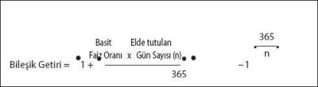

GİRİŞ
Bu bölümde mali piyasalar, bu piyasadaki enstrümanlar, ekonomik gelişmelerin piyasadaki enstrümanlar üzerindeki etkileri ve benzeri konular incelenecektir. Geniş bir içeriği olan bu kısım da kitabın genel ilkeleri doğrultusunda, olabildiğince detaydan uzak ve kısa tutulmaya çalışılmıştır. Bu bölümde tartışılacak konular aşağıdaki gibidir:
• Mali piyasalar
• Sermaye piyasaları
• Para piyasaları
• Sermaye ve para piyasası enstrümanları
• Makro ekonomik gelişmeler ve piyasalar üzerindeki etkileri
• Değişen piyasa koşulları, yatırım enstrümanları ve yatırımcı
• Yatırım ve risk analizi
MALİ PİYASALAR
Piyasa Kavramları, Çeşitleri ve Özellikleri
İktisadi açıdan piyasa, alıcı ve satıcıların birbirleri ile karşılıklı iletişim içinde oldukları ve mübadelenin meydana geldiği bir yerdir. Piyasa çok sayıda alıcı ve satıcının bir araya geldiği ve organize bir yapıya sahip olması durumunda somut biçimiyle borsa olarak tanımlanır.
Mali Piyasalar, Kurumlar ve Araçları
Bir ülkede fon kullananlar ile fon arz edenler arasında fon akımları düzenleyen kurumlar, akımı sağlayan araç ve gereçler ile bunları düzenleyen hukuki ve idari kurallardan oluşan yapıya mali piyasa denir.
Mali piyasa beş ana unsurdan oluşmaktadır:
• Tasarruf sahipleri (fon arz edenler)
• Yatırımcılar (fon talep edenler)
• Yatırım ve finansman araçları
• Yardımcı kuruluşlar
• Hukuki ve idari düzen
Ekonomi İçerisinde Mali Piyasaların İşlevleri
a. Fon açığı/fazlası olan katılımcılar açısından
Bir mali sistemde her durumda aşağıdaki eşitlik geçerlidir.
Tasarruf – Yatırım = Mali Varlıklarda Net Artış – Mali Yükümlülüklerde Net Artış
Bu durumda her mali sistemde fon fazlası veren birimler ile fon açığı olan birimler sistemin kullanıcıları olarak karşımıza çıkmaktadır. Buna göre, ekonomideki yatırımların toplam değeri, yapılan tasarrufların altında ise, bazı kaynaklar mali varlıklar olarak stoklanırlar. Bunun tersi durumda ise, yani tasarrufları aşan yatırım durumunda ise, söz konusu yatırımların borçlanılarak yapılması gerekecektir, bu durum da beraberinde mali yükümlülükler doğuracaktır.
Mali sistemin ortaya çıkması ve biçimlenmesi ise borç alanlar (yatırımcılar) ile borç verenler (tasarruf sahipleri) arasında olanaklar ve ihtiyaçlar arasındaki miktar, vade ve diğer koşullardaki uyuşmazlıkları gidermeye yönelik olmuştur.
b. Mali aracılar açısından
Mali aracılar tamamen bir komisyoncu (agency-broker) gibi borçlunun ihraç ettiği menkul kıymetleri (tahvil, finansman bonosu, hisse senedi vb.) tasarruflarını kullandırmak isteyenlere bir komisyon karşılığı pazarlayarak faaliyet gösterebildikleri gibi, bu menkul kıymetleri portföyünde taşıyarak (broker-dealer) ya da fon açığı olanlara kullandırmak üzere tasarruf sahiplerinden fon sağlamak için onların ihtiyaçlarına uygun enstrümanlar üreterek (vadeli-vadesiz mevduat, mevduat sertifikası, vb.) de faaliyet gösterebilirler. Buna göre sistemdeki mali aracılar aşağıdaki gibi adlandırılabilirler:
• Bankalar
• Aracı kuruluşlar
• Yatırım ortaklıkları
• Sosyal güvenlik kuruluşları
• Sigorta şirketleri
• Kooperatifler
• Genel finans ortaklıkları
• Menkul kıymet borsaları
Ekonomide Fon Akımları
Mal ve hizmet karşılığı yapılan ödemeler ve borç alma, borç verme, yatırım gibi ekonomik aktiviteler bir ekonomik sistem içinde gerçekleştirilmektedir. Bu aktivitelerden spot olarak gerçekleştirilen mal ve hizmet alım satımları "reel sektör"ü belirlerken, mali varlık ve yükümlülüklerdeki el değişimleri "mali sektör"ü belirlemektedir.
Vadelerine Göre Mali Piyasalar
Mali piyasaları vadelerine göre ikiye ayırmak anlamlı olacaktır. Her ne kadar piyasadaki faiz oranı makro düzeyde çok etkin de olsa, dar anlamda baktığınızda zaten piyasadaki tüm tarafların makro oranı kabullendiklerini ve aşağı yukarı tüm işlemlerin benzer faiz oranlarından gerçekleştiğini görürüz. Buna göre, işlemler için mikro düzeyde vade yapısı önemlidir. Vade yapısına göre piyasayı ikiye ayırıyoruz:
Sermaye Piyasası: Orta ve uzun vadeli fon arz ve talebinin karşılaştığı piyasa.
Para Piyasası: Kısa vadeli fon arz ve talebinin karşılaştığı piyasa.
Çalışmada bundan sonra söz konusu iki piyasa ayrı ayrı incelenecek ve ilgili enstrümanlar tanıtılacaktır.
Sermaye Piyasası Tanımı, Mali Piyasa İçerisindeki Yeri ve Genel Yapısı
Sermaye piyasası, sermaye arz ve talebinin karşılaştığı piyasadır. Sermaye ise orta ve uzun vadeli fonlardır. Pratik bir yaklaşımla, orta ve uzun vadeli fonlar tahvillere, sonsuz vadeli fonlar ise hisse senetlerine tekabül etmektedir. O hâlde sermaye piyasası, orta, uzun ve sonsuz vadeli fonların arz ve talebinin aracı kuruluşlar aracılığı ile ve menkul kıymetlere bağlı olarak karşılaştığı piyasadır.
Mali piyasanın diğer parçası kısa vadeli fonların arz ve talep edildiği para piyasasıdır. Para piyasasına geçici ve mevsimlik nakit sıkıntısının giderilmesi için sermaye piyasasına ise genellikle sabit yatırımlar ve devamlı işletme sermayesinin finansmanı için başvurulur. Para piyasasında kaynaklar vadeli ve vadesiz mevduat, sermaye piyasasında ise devamlılık arz eden tasarruflardır.
Sermaye Piyasası Faaliyetleri
Sermaye Piyasası kurumlarından aracı kuruluşlar, aracılık kapsamında olmak üzere her bir ayrı faaliyet için Sermaye Piyasası Kurulu’ndan yetki belgesi alarak aşağıdaki faaliyetleri yerine getirebilirler.
Kurul kaydına alınacak sermaye piyasası araçlarının ihraç veya halka arz yoluyla satışına aracılık,
• Daha önce ihraç edilmiş olan sermaye piyasası araçlarının aracılık amacıyla alım satımı,
• Ekonomik ve finansal göstergelere, sermaye piyasası araçlarına, mala, kıymetli madenlere ve dövize dayalı vadeli işlem ve opsiyon sözleşmeleri dâhil her türlü türev araçlarının alım satımının yapılmasına aracılık,
• Menkul kıymetlerin geri alım veya satım taahhüdü ile alım satımı,
• Yatırım danışmanlığı,
• Portföy işletmeciliği veya yöneticiliği.
Yukarıda sıralanan işlemleri yapabilmek için yetki alabilecek kuruluşlar aracı kurumlardır ve bu kurumlar banka ve diğer finansal aracılardan ayrı olarak kurulmaktadırlar.
Sermaye Piyasası Kurumları
Sermaye Piyasası Kanunu’na göre faaliyette bulunabilecek olan "Sermaye Piyasası Kurumları" aşağıdakilerdir.
• Aracı kuruluşlar (yetki belgesi almış bankalar ve aracı kurumlar)
• Yatırım ortaklıkları
• Yatırım fonları
• Sermaye piyasasında faaliyet göstermesine izin verilen diğer kurumlar
Sermaye Piyasası Kanunu
2499 nolu Sermaye Piyasası Kanunu 30 Temmuz 1981 tarih ve 17416 sayılı Resmi Gazete’de yayımlanmış olup, sermaye piyasası bu tarihe kadar hukuksal bir çerçeveden tamamen yoksun kalmıştır. Bu kanuna dayanarak yapılan düzenlemeler piyasayı bankerler olgusunun etkilerinden kurtarmaya yetişememişse de zamanla piyasaya arzulanan düzeni getirmiştir. Bu düzen kuruluncaya kadar sermaye piyasası ve menkul kıymetler konusu Türk Ticaret Kanunu (TTK), Medeni Kanun ve Borçlar Kanunu’nun genel hükümleri ve Merkez Bankası tebliğleri ile düzenlenmekteydi.
Konu ve Amacı
Sermaye Piyasası Kanunu’nun konusu, tasarrufların menkul kıymetlere yatırılarak, halkın iktisadi kalkınmaya etkin ve yaygın bir şekilde katılmasını sağlamak amacıyla sermaye piyasasının güven, açıklık ve kararlılık içinde çalışmasını, tasarruf sahiplerinin hak ve yararlarının korunmasını düzenlemek ve denetlemektir.
Kapsamı
• Sermaye piyasası araçları (menkul kıymetler ve diğer sermaye piyasası araçları),
• Sermaye piyasası araçlarının ihracı,
• Sermaye piyasası araçlarının halka arzı ve satışı,
• Sermaye piyasası araçlarını ihraç veya halka arz edenler,
• Borsalar ve teşkilatlanmış diğer piyasalar,
• Sermaye piyasası faaliyetleri,
• Sermaye piyasası kurumları,
• Sermaye Piyasası Kurulu.
Yukarıda belirtilenler, bu kanun hükümlerine tabidir. Ancak halka açık olmayan anonim ortaklıkların halka arz edilmeyen hisse senedi ihraçları bu kanunun kapsamı dışındadır.
Bazı Temel Kavramlar
Kayıtlı sermaye
Anonim ortaklıkların esas sözleşmelerinde hüküm bulunmak kaydıyla, yönetim kurulu kararı ile Türk Ticaret Kanunu’nun sermayenin artırılmasına dair hükümlerine tabi olmaksızın hisse senedi çıkarabilecekleri azami miktarı gösteren, ticaret sicilinde tescil edilmiş sermayeleridir.
Kayıtlı sermaye sistemini kabul etmek isteyen ortaklıklarda, yönetim kuruluna imtiyazlı veya itibari değerinin üzerinde hisse senedi çıkarılma, pay sahiplerinin yeni pay alma haklarının sınırlandırılma veya imtiyazlı hisse senedi sahiplerinin haklarını kısıtlayıcı nitelikte karar alınma yetkisi verilmek istendiği takdirde, bu yetkilerin yönetim kuruluna verildiğine dair açık hükümlerin esas sözleşme metninde yer alması şarttır. Yönetim kurulunun yeni pay alma hakkını kısıtlama yetkisi, pay sahipleri arasında eşitsizliğe yol açacak şekilde kullanılamaz.
Çıkarılmış sermaye
Kayıtlı sermayeli anonim ortaklıkların satışı yapılmış hisse senetlerini temsil eden sermayeleridir.
Sermaye piyasası araçları
Menkul kıymetler ve diğer sermaye piyasası araçlarıdır.
Menkul kıymetler
Ortaklık veya alacaklılık sağlayan, belli bir meblağı temsil eden, yatırım aracı olarak kullanılan, dönemsel gelir getiren, misli nitelikte seri hâlinde çıkarılan, ibareleri aynı olan ve şartları kurulca belirlenen kıymetli evraktır.
Menkul kıymetler olarak; hisse senetleri, hisse senedi türevleri, geçici ilmühaberler, yeni pay alma kuponları, tahviller, tahvil türevleri tahvil faiz kuponları, hazine bonoları, katılma intifa senetleri, kâr ve zarar ortaklığı belgeleri banka bonoları, banka garantili bonolar, finansman bonoları, varlığa dayalı menkul kıymetler, gelir ortaklığı senetleri, tertip hâlinde çıkarılan ve 2 yıl veya daha uzun süreli ipotekli borç ve irat senetleri, içtüzüğünde kurucu dışındaki aracı kuruluşlarca serbestçe alım satımı öngörülen A tipi yatırım fonu katılma belgeleri sayılabilir.
Diğer sermaye piyasası araçları
Menkul kıymetler dışında kalan ve şartları kurulca belirlenen evraktır.
İhraç
Sermaye piyasası araçlarının ihraççılar tarafından çıkarılıp, halka arz edilerek veya halka arz edilmeksizin satışıdır.
Halka arz
Sermaye piyasası araçlarının satın alınması için her türlü yoldan halka çağrıda bulunulmasını, halkın bir anonim ortaklığa katılmaya veya kurucu olmaya davet edilmesini, hisse senetlerinin borsalar veya teşkilatlanmış diğer piyasalarda devamlı işlem görmesini, Sermaye Piyasası Kanunu’na göre halka açık anonim ortaklıkların sermaye artırımları dolayısıyla paylarının veya hisse senetlerinin satışını ifade eder.
Sermaye Piyasası Kurulu (SPK)
Yapısı
Sermaye Piyasası Kanunu ile verilen görevleri yapmak üzere tüzel kişiliğe haiz, Sermaye Piyasası Kurulu kurulmuştur.
Kurul, biri başkan, biri başkan vekili olmak üzere yedi üyeden oluşur. Kurul, yetkilerini kendi sorumluluğu altında bağımsız olarak kullanır. Merkezi Ankara’dadır. Kurul kararıyla yurt içinde ve yurt dışında gerekli görülen yerlerde temsilcilik kurulabilir, büro açılabilir.
Kurul, ilgili bakanlıkça gösterilecek altı aday arasından üçü, Adalet Bakanlığı, Ticaret Bakanlığı, T.C. Merkez Bankası ve Türkiye Bankalar Birliği’nce gösterilecek ikişer adaydan birer kişi Bakanlar Kurulu tarafından seçilmek suretiyle yedi üyeden oluşur. Bakanlar Kurulu, ilgili bakanlık adayları arasından seçilenlerden birisini başkan, birini de başkan vekili olarak görevlendirir. Bakanlıklar ve T.C. Merkez Bankası’nca gösterilecek adayların en az yarısının bünyelerinden olması şarttır.
Kurul başkanlığı ve üyeliklerine atanacakların, yüksek öğrenim görmüş ve finans, iktisat, maliye, hukuk, bankacılık, işletmecilik ve mühendislik dallarından birinde veya birkaçında tecrübe sahibi olması zorunludur.
Kurul başkanı, başkan vekili ve üyelerinin görev süresi üç yıldır. Süresi bitenler yeniden seçilebilir.
Kurul başkan ve üyeleri, Yargıtay Birinci Başkanlık Divanı huzurunda görevlerinin devamı süresince kurulun işlerini tam bir dikkat ve dürüstlük ile yöneteceklerine, kanun hükümlerine aykırı hareket etmeyeceklerine ve ettirmeyeceklerine dair yemin ederler.
Görev ve Yetkileri
Sermaye Piyasası Kurulu’nun başlıca görev ve yetkileri şunlardır:
a. Sermaye Piyasası Kanunu’nun uygulanması açısından sermaye piyasası araçlarının ihracını, halka arz ve satışının şartlarını düzenlemek ve denetlemek,
b. İhraç veya halka arz olunacak sermaye piyasası araçlarını kurul kaydına almak ve kamu yararının gerektirdiği hâllerde sermaye piyasası araçlarının halka arz ve satışını geçici olarak durdurmak,
c. İhraççıların alacaklarına ve duran varlıklarına dayalı olarak çıkaracakları varlığa dayalı menkul kıymetlerin şartlarını, ihraç ve halka arz esaslarını ve tabi olacakları sair hususları düzenlemek, gerektiğinde münhasıran varlığa dayalı menkul kıymet ihracı ile iştigal eden genel finans ortaklıkları ve risk sermayesi yönetim şirketlerini denetlemek,
ç. 3568 sayılı kanuna göre, denetlemeye yetkili olanların sermaye piyasasında bağımsız denetleme, faaliyetlerinde bulunmak üzere oluşturacakları kuruluşlara ilişkin kuruluş şartlarını ve çalışma esaslarını, bu şartlara uyan sermaye piyasasında bağımsız denetlemeye yetkili kuruluşları listeler hâlinde ilan etmek,
d. Kamunun zamanında yeterli ve doğru olarak aydınlatılmasını sağlamak amacıyla, genel ve özel nitelikte kararlar almak ve her türlü mali tablo ve raporlar ile bunların bağımsız denetimlerinin, sermaye piyasası araçlarının halka arzında yayımlanacak izahname, sirküler ve araçların değerini etkileyebilecek önemli bilgilerin kapsamını, standartlarını ve ilan esaslarını tespit ve bu konularda tebliğler yayımlamak,
e. Sermaye Piyasası Kanunu’na tabi ihraççıların ve bu alanda yer alan bankaların, sermaye piyasası kurumlarının, borsalar ve teşkilatlanmış diğer piyasaların faaliyetlerinin Sermaye Piyasası Kanunu’na, kurul yönetmenlik, tebliğ ve kararlarına, sermaye piyasaları ile ilgili diğer mevzuata uygunluğunu gerekli her türlü bilgi ve belgeyi isteyerek, izlemek ve denetlemek,
f. Sermaye piyasasını ilgilendiren her türlü yayın, duyuru ve reklamları izlemek, yanıltıcı ilan ve reklamları yasaklamak,
g. Sermaye Piyasası Kanunu hükümleri gereğince kendisine tevdi edilen mali tablo ve raporları, bağımsız denetleme raporları ile diğer belgeleri inceleyerek gerekli gördüğü hususlar hakkında ihraççı ve kurum denetçilerinden veya bağımsız denetçilerden ayrıca rapor istemek, elde ettiği sonuçları değerlendirerek, Sermaye Piyasası Kanunu’nda belirtilen gerekli tedbirleri almak,
h. Halka açık anonim ortaklıkların genel kurullarında genel hükümler çerçevesinde vekaleten oy kullanılmasına ilişkin esasları belirlemek,
ı. Ekonomik ve finansal göstergelere, sermaye piyasası araçlarına, mala, kıymetli madenlere ve dövize dayalı vadeli işlem ve opsiyon sözleşmeleri dâhil her türlü türev araçların niteliklerini, alım ve satım yöntemini, bu araçların işlem göreceği borsalarda çalışacak kurumların kuruluş, denetim, faaliyet ilke ve esasları ile yükümlülüklerini, teminatlar, takas ve saklama sistemi konularındaki esas ve usulleri düzenlemek,
i. Menkul kıymetlerin geri alma veya satma taahhüdü ile alım ve satımını, ilgili sözleşmeleri ve bu sözleşmelere ilişkin piyasa işlem kurallarını düzenlemek ve bu işlemlerle ilgili faaliyet ilke ve esaslarını belirlemek,
j. Menkul kıymet ödünç alma ve verme işlemleri ile satış işlemlerine ilişkin ilke ve esasları belirlemek, Hazine ve Dış Ticaret Müsteşarlığı ile T.C. Merkez Bankası’nın görüşü alınmak suretiyle kredili menkul kıymet işlemleri ile ilgili düzenlemeler yapmak,
k. Dışarıda yerleşik kişilerin Türkiye’deki sermaye piyasası araçlarının ihraç ve halka arzı konusunda ilgili mevzuat çerçevesinde gereken düzenlemeleri yapmak,
l. Sermaye piyasası araçlarının takası, saklanması veya kayda değer hâle getirilmesi, resmi sicil niteliğindeki sermaye piyasası araçları sicili ile bu sicili tutacak merkezin kuruluş ve çalışma esaslarını ve menkul kıymetlerin derecelendirilmesini düzenlemek ve denetlemek,
m. Sermaye piyasasının gelişmesini teminen yeni sermaye piyasası kurumlarına ilişkin kurul, faaliyet, tasfiye ve sona erme esaslarını belirlemek ve bunları denetlemek,
n. İlgili bakanca istenecek incelemeleri yapmak, çalışmaları hakkında ilgili bakana rapor vermek, sermaye piyasası ile ilgili mevzuat değişiklikleri hakkında önerilerde bulunmak,
o. Sermaye piyasası kurumlarının sorumluluk sigortası yaptırmalarını istemek ve ilgili mevzuat saklı kalmak kaydıyla gerekli düzenlemeleri yapmak,
ö. Sermaye Piyasası Kanunu’na tabi ortaklık ve kuruluşların mali bünyeleri ve kaynaklarının kullanımı ile ilgili standart rasyoları genel olarak ya da sektör, bölge ve ortaklık bazında belirlemek, bu rasyoların yayımlanmasına ilişkin usul ve esasları düzenlemek.
Para Piyasası
Para Piyasası, mali piyasanın bir alt piyasasıdır. Vadesinin kısa olması nedeniyle sermaye piyasasından ayrılmaktadır. Buna göre, vadesi bir yıldan kısa olan fon arz ve talebinin karşılaştığı piyasalara para piyasası denmektedir.
Bu tanımlar dikkate alındığında piyasaları enstrümanlara göre ayırmanın çok da anlamlı olmadığı ortaya çıkacaktır. Zira kamunun ihraç ettiği bir borçlanma senedinin vadesine göre sermaye piyasası aracı olabileceği gibi, para piyasası aracı olarak da tanımlanması mümkün olacaktır.
Söz konusu piyasalarda el değiştiren paranın yerel para olmaması durumunda ise "para piyasası" tanımı yerine "döviz piyasası" kullanılacaktır. Döviz piyasası konumuz olmadığından detaylandırılmayacak olmakla birlikte, yine de organize ve tezgâhüstü piyasalarda işlem gördüğünün belirtilmesinde yarar görmekteyiz.
Para Piyasası İşleyişi
Para piyasası da tıpkı sermaye piyasası gibi işlemektedir. Temel fark, sermaye piyasasında enstrümanı ihraç eden bir ihraççı olması bu ihraççıyla doğrudan karşılaşılan birincil piyasayı takiben organize piyasa (borsa) ya da tezgâhüstü piyasa olmasıyken, para piyasasında ihraççı önemini yitirmekte ve paranın el değiştirdiği fiili piyasa önem kazanmaktadır.
Buna göre para piyasasını çok kısa vadeli kaynak kullanım-aktarım piyasası olarak düşünürsek, sistem, oyuncuların karşılaştığı ve teminat karşılığı fonun el değiştirdiği bir şekilde işleyecektir.
Piyasa organize olabileceği gibi, tezgâhüstü (organize olmayan) bir formatta da işleyebilir. Piyasa oyuncuları, gösterge kur ve fiyatlarla pazara katılır ve karşı tarafın gösterge kurlarını görürler. Bu kur ve fiyatlar piyasayı oluşturur ve tüm potansiyel katılımcılara mevcut durum ile ilgili bilgi verirler.
Ancak katılımcılar fon alım ya da satımına karar verdiklerinde, karşı taraflara konvansiyonel yollarla (telefon-faks gibi) bilgi geçer ve işlemi gerçekleştirirler. İşlemin gerçekleşmesi esnasında her ne kadar gösterge kurlar önemli olsa da taraflar, işlemin büyüklüğü, piyasadaki belirsizlikler ve ahlaklı ticaret gibi konular nedeniyle nihai kur (firm rate) genellikle farklı olur ve bu gerçek kur ya da fiyattır.
Piyasa katılımcıları bir taraftan kendi durumlarını, ihtiyaçlarını, maliyetlerini ve projeksiyonlarını alarak fiyatlama yapmaya hazırlanırken, diğer yandan da piyasadaki diğer oyuncuların durumlarını dikkate alırlar, sistemin ne derece paraya ihtiyacı olduğunu tespit etmeye çalışırlar.
Para piyasası bir telekomünikasyon piyasası olduğundan, genellikle şeklî bir borsa olmayacaktır. Zira sistemin üyeleri tarafından kabul edilmiş her katılımcı sisteme girer ve çıkar.
Ülkemizde Para Piyasaları
Ülkemizde temel olarak üç para piyasası vardır:
• Bankalar arası piyasa
• Merkez Bankası piyasası
• Takasbank piyasası
TCMB Para Piyasası
Bu sistemlerden en organize olanı ve en yüksek işlem hacmine sahip olanı TCMB para piyasasıdır. Bu piyasada katılımcılar işlemlerini Merkez Bankası üzerinden gerçekleştirmektedirler. Bu durumda Merkez Bankası sistemin kurucusu, işletmecisi, denetleyicisi ve garantörüdür.
Piyasa katılımcıları Merkez Bankası’nda teminat tutmak kaydıyla ondan borç alabilir ya da para satabilirler. Söz konusu borçlanma ya da kaynak satışı Merkez Bankası’na yapılıyor gibi görünür. Oysa Merkez Bankası topladığı kaynakları makul bir kâr eklemesiyle birlikte fon ihtiyacı olan diğer aracılara satmaktadır. Dolayısıyla, aslında kurumlar birbirlerinden borçlanmaktadırlar; ancak tüm işlemlerin aracısı Merkez Bankası olduğundan tek muhatap o gibi görünür.
Bu sistemin iyi tarafı, kimin kimden para aldığının belli olmaması, TCMB’nin tüm taraflar için garantör ve oldukça organize olmasıdır. Ancak detaylı düşünüldüğünde, Merkez Bankası’nın tüm taraflara garantör olmasının çok riskli bir iş olacağı fark edilecektir. Dolayısıyla, Merkez Bankası kefalet konusunda hassas olacak ve her katılımcıyı aynı kefeye koymayacaktır. Katılımcılar merkez bankasının açtığı limit kadar borçlanabilecek ve istediği teminatı yatıracaklardır.
Oldukça organize, büyük, garantili ve düzenli olan bu piyasa, sistem katılımcıları tarafından yaygın olarak kullanılmakla birlikte, limit problemleri ve maliyet yüksekliği nedeniyle farklı piyasaları da gündeme getirmiştir.
Takasbank Para Piyasası
Merkez Bankası para piyasası birtakım dezavantajlarına rağmen oldukça yaygın bir biçimde kullanılan bir piyasadır. İşlem hacmi büyüdükçe güçlü kurumlar daha da büyük montanları el değiştirmeye başlamış ve piyasa bazı küçük oyuncular için fazla büyük kalmıştır.
İMKB’de işlem gören hisselerin büyük bölümünün fiziki olarak saklandığı ve aynı oranda paranın da el değiştirdiği TAKASBANK AŞ benzer bir piyasayı, bankalara göre küçük olan aracı kurumlar için düşünmüş ve hayata geçirmiştir: Takasbank para piyasası.
Söz konusu piyasa hem atıl fonu bulunan aracı kurumların bu fonu satmasına, hem de TCMB’den borçlanamayan aracı kurumların borçlanmasına hizmet etmektedir. Yakın dönemde hacmi oldukça genişleyen Takasbank para piyasası, bankaların da ilgisini çekmiş ve daha çok katılımcıya hizmet verir hâle gelmiştir.
TCMB piyasasına benzer şekilde ve benzer ilkelerle çalışan piyasa, yine tarafların kimliğini saklı tutarak tek muhatap görünür ve teminat esasına dayanır. Oluşan faiz oranı kimi zaman TCMB piyasasından farklılık gösterse de ciddi bir fark beklenmemelidir.
Bankalar Arası Para Piyasası
Bazı durumlarda piyasa katılımcıları Merkez Bankası para piyasasından borçlanmakta güçlük çekerler. Bunun çeşitli nedenleri olabilir. Örneğin bankanın TCMB nezdindeki borçlanma limiti dolmuş olabilir ya da yeterli teminatı olmayabilir. Bir diğer neden de maliyetin yükselmesi olarak karşımıza çıkabilir. Bu ve bunun gibi nedenlerden ötürü söz konusu sistemi kullanamayan katılımcılar, diğer piyasa katılımcıları ile doğrudan irtibata geçebilir ve işlem yapabilirler.
Buna göre, bankalara kendi aralarında, güvene ya da karşı tarafın kabul edeceği bir teminata (genellikle hazine bonosu) dayalı olarak borçlanırlar. Ancak bu sistemin garantörü yoktur. Dolayısıyla yine sistem katılımcıları birbirlerinin riskini analiz ederler ve gayri resmi limitler tanırlar. Bu limitler doğrultusunda işlemler yürütülür ve borçlanma sürdürülür.
Borçlanmanın repo şeklinde yapıldığı da görülür. Bu durumda direkt borçlanma yerine tarafların karşı tarafın bonolarını teminat kabul ederek müşteri-repo yapan banka konumunda hareket ettikleri gözlemlenecektir.
Piyasada taraflar çift taraflı kotasyon verirler. Organize olmayan bir sistemdir. Kotasyondaki[2] alış-satış arasındaki fark, kârı ifade edecektir. İşlem yapmak için en iyi fırsat veren ya da en iyi karşı tarafı saptamak gerekir. Market Maker, alım satımda da en iyi fiyat veren olmaya çalışır, spreadi (alım satım fiyatı arasındaki farkı) küçültür.
Para Piyasası Enstrümanları ve Risk
Para piyasasına özgün enstrümanlar[3] olduğunu söylemek güçtür. Ancak, kısa vadeli fon[4] arz ve talebinin karşılaştığı piyasalar olduğu dikkate alındığında ortaklık ilişkisi ifade eden birtakım enstrümanların kullanılmadığını söyleyebiliriz. Buna göre, para piyasasında doğrudan borçlanma kullanılmakta, bunu kolaylaştırmak için de hazine bonosu ve repo işlemleri yaygın olarak kullanılmaktadır. Öte yandan, sıklıkla olmamakla birlikte hisse senetleri de türev enstrüman ya da teminat olarak kullanılabilmektedir.
Para piyasası, tanımı gereği kısa vadeyi ifade ettiğinden kısa vadeli faiz dalgalanmalarına karşı riski de yüksektir. Katılımcının bilançosunun iki tarafı da dikkate alındığında aktifindeki hangi kalemi bu piyasadan fonladığı incelenerek risk düzeyi tespit edilebilir. Örneğin, bilançodaki bir duran varlığı ya da uzun vadeli bir bonoyu repo ile fonlamak ciddi bir finansal risk anlamına gelecektir. Dolayısıyla, hangi piyasanın tercih edileceği (sermaye piyasası – para piyasası) şirketten şirkete ve beklentilere göre değişecektir.
SERMAYE VE PARA PİYASASI ENSTRÜMANLARI
Menkul Kıymetler
Ortaklık ve alacaklılık sağlayan, belirli bir meblağı temsil eden, yatırım aracı olarak kullanılan, dönemsel gelir getiren, seri hâlinde çıkarılan, ibareleri aynı olan ve şartları kurulca belirlenen kıymetli evraklara menkul kıymet denir.
Menkul kıymet olarak; hisse senetleri, hisse senedi türevleri, geçici ilmühaberler, yeni pay alma kuponları, hazine bonoları, katılma intifa senetleri, kâr ve zarar ortaklığı belgeleri, banka bonoları, banka garantili bonolar, finansman bonoları, varlığa dayalı menkul kıymetler, gelir ortaklığı senetleri, tertip hâlinde çıkarılan ve 2 yıl veya daha uzun süreli ipotekli borç ve irat senetleri, içtüzügünde kurucu dışındaki aracı kuruluşlarca serbestçe alım satımı öngörülen A tipi yatırım fonu katılma belgelerini sayabiliriz.
Menkul Kıymet Özellikleri
• Ortaklık veya alacaklılık sağlar.
• Belli bir meblağı temsil eder.
• Yatırım aracı olarak kullanılır.
• Dönemsel gelir getirir.
• Misli nitelikte, seri hâlinde çıkarılır.
• İbareleri aynıdır.
• Şartları kurulca belirlenir.
• Kıymetli evrak özelliğindedir.
Menkul Kıymet Çeşitleri ve Tanımları
• Hisse senedi
• Kâra iştirakli tahvil
• Tahvil
• Kâr ve zarar ortaklığı belgeleri (KOB)
• Katılma intifa senetleri (KİS)
• Yatırım fonu katılma belgeleri
• Hisse senedi ile değiştirilebilir tahvil
• İpotekli borç ve irat senetleri
• Banka bonoları
• Banka garantili bonolar
• Finansman bonoları
• Varlığa dayalı menkul kıymetler
• Hazine bonoları
• Gelir ortaklığı senetleri
Hisse Senetleri
Hisse senedi, bir anonim şirketin sermayesinin birbirine eşit paylarından bir parçasını temsil eden ve kanuni şekil şartlarına uygun olarak düzenlenen hukuken kıymetli evrak hükmünde bir belgedir. TTK’nın hisse senetleri ile ilgili 399 ve devamı maddeleri içinde hisse senetleri tanımlanmamış sadece nitelik ve özellikleri belirlenmiştir. Hisse senedinin geniş ve bilimsel tanımlaması şu şekilde yapılabilir:
Sermayesi paylara bölünmüş ve karşılığında kıymetli evrak niteliğinde hisse senedi çıkarabilen anonim ortaklık veya yine sermayesi paylara bölünmüş komandit ortaklıkların kanuni şekillere uygun olarak düzenledikleri belgeler olup, sermayesinin belli bir oranını temsil ve sahiplerine o oranda ortaklık hakkı sağlayan senetlerdir.
Hisse Senedi Türleri
Hisse senetleri TTK’nın 409. maddesine göre hamiline veya nam’a yazılı olmak üzere ikiye ayrılırlar. Bu ayrımın dışında hisse senetleri çeşitli şekillerde sınıflandırılabilir.
a. Hamiline ve Nam’a Yazılı Hisse Senetleri
Bu ayırımın önemi hisse senetlerinin devir işlemlerinde ortaya çıkmaktadır. Hamiline yazılı hisselerde devir işlemi teslimle tamamlanırken, nam’a yazılı hisselerin devir işlemlerindeki ayrı kaynaklar nedeniyle devir, ciro edilmiş senedin devir alana teslimi ve şirketin pay defterine kaydedilmesi ile mümkün olmaktadır.
b. Adi ve İmtiyazlı Hisse Senetleri
Hisse senetleri, ana sözleşmede aksine bir hüküm yoksa sahiplerine eşit haklar sağlarlar. Bu tip hisse senetlerine adi hisse senetleri denir. Bir kısım hisse senetleri ise adi hisse senetlerine nazaran kâra iştirak ve genel kurulda oy kullanma bakımından TTK’nın 401 maddesine dayanılarak ana sözleşme ile sahiplerine imtiyazlı haklar tanıyabilir. Esas sözleşme ile imtiyazlı hisselere kârdan belli oranda özel temettü dağıtımı öngörülebilir, rüçhan hakkı kullanımında, oy hakkında, tasfiye sonucuna katılmada, organ üyeliklerinde aday göstermede, tesislerden yararlanmada bazı ayrıcalıklar tanınabilir.
c. Bedelli ve Bedelsiz Hisse Senetleri
Yeni taahhüt veya ödeme yolu ile çıkarılan, diğer bir deyişle bedelli artırıma konu olan hisseler ya kuruluş aşamasında çıkarılırlar ya da sermaye artırımlarında rüçhan hakkı kullanımıyla eski ortaklar tarafından veya halka arz yolu ile üçüncü kişiler tarafından satın alınırlar.
Yedek akçe, dağıtılmamış kâr, yeniden değerleme değer artış fonu gayrimenkul satış kazançları veya iştirakleri değer artışlarının sermayeye eklenmesi nedeniyle çıkarılacak hisse senetleri için yeni bir ödeme veya yeni bir taahhüde gerek yoktur. Bu durumda yeni hisse senetleri eskisinin uzantısı olduğundan, bedelsiz hisse senetlerini edinme hakkı eski ortaklara yani pay sahiplerine aittir.
ç. Primli ve Primsiz Hisse Senetleri
Türk hukuk sisteminde nominal değeri bulunmayan hisse senedi ihracı söz konusu değildir. Öte yandan, TTK 286. maddeye göre de nominal (itibari) değerinden aşağı bir bedelle de hisse senedi ihraç edilemez. Üzerine yazılı değer ile ihraç edilen hisse senetlerine primsiz, nominal değerinden yüksek bedelle ihraç edilen hisse senetlerine primli hisse senedi denir. Primli hisse senedi ihracı için ya esas sözleşmede hüküm bulunmalı ya da genel kurul tarafından karar alınmalıdır. Kayıtlı sermaye sisteminde ise, esas sözleşme ile yetki verilmiş olmak üzere, yönetim kurulu kararı ile primli hisse ihraç edilebilir. Primli hisse ihraç edilmesi hâlinde, oluşacak emisyon primleri vergiye tabi olmaktadır.
d. Kurucu ve İntifa Hisse Senetleri
Kurucu hisse senetleri, belli bir sermaye payını temsil etmediği gibi şirketin yönetimine katılma hakkını da vermez. Bu durumda, kuruluş hizmeti karşılığı olmak üzere, ana sözleşme hükümleri gereğince, şirket kârının bir kısmı iştirak hakkı temin etmek üzere ve daima kurucuların adlarına yazılı olmak şartıyla ihraç edilir (TTK m. 402). İntifa hisse senetleri, şirket genel kurulunun alacağı kararla bazı kimselere çeşitli hizmetler ve alacak karşılığı olarak kuruluştan sonra verilen ve sermaye payını temsil etmeyen hisse senetleridir.
Hisse Senetlerinin Yatırımcılara Sağladığı Haklar
Hisse senedi şirket sermayesinin belirli bir kısmını temsil eder ve sahibine her türlü ortaklık haklarından yararlanma imkânı verir. Bu haklar şöyle sıralanabilir:
• Şirket kârından pay alma hakkı,
• Şirket yönetimine katılma hakkı,
• Oy kullanma hakkı,
• Rüçhan hakkı,
• Tasfiyeden pay alma hakkı,
• Şirketin faaliyetleri ile ilgili bilgi edinme hakkı.
Hisse Senedi Fiyat Tanımlamaları
Hisse senedi fiyat kavramındaki başlıca tanımlamalar nominal fiyat, ihraç fiyatı, piyasa fiyatı ve borsa fiyatıdır.
a. Nominal (İtibari) Fiyat
Pay senedinin yazılı olan fiyatıdır. Toplam sermayenin miktarını belirleyebilmek ve bununla ikili muhasebe kayıtlarını yapabilmek için pay senedinin ilk çıkarılışı sırasında ortaklık yönetimi tarafından verilen değerdir. Nominal değer minimum 1 yeni kuruş olabilir.
b. İhraç Fiyatı
Hisse senetlerinin şirket tarafından çıkarılışı aşamasında satışa sunulduğu fiyattır. Halka arz fiyatı da denilebilir.
c. Piyasa Fiyatı
Bir pay senedinin sermaye piyasasında alınıp satıldığı fiyat, o pay senedinin piyasa fiyatı olarak tanımlanır. Arz ve talep koşullarına göre oluşan fiyattır. Halka açık olup borsada işlem gören senetler için geçerlidir.
ç. Borsa Fiyatı
Borsada işlem görmeye başlayan hisse senetlerinin borsadaki arz ve talep koşullarına göre oluşan fiyatıdır.
Hisse Senedinin Değer Tanımlamaları
Hisse senedi değer tanımlamaları, hisse senedi verimliliğinin saptanmasında kullanılan ölçümlerde ve analizlerde ele alınan tanımlamalardır.
a. Defter Değeri
Bir işletmenin öz sermaye toplamının pay senedi sayısına bölünmesiyle belirlenir. Burada öz sermaye ile, ödenmiş sermaye, ihtiyaçlar toplamı, dağıtılmamış kârlar, yeniden değerleme değer artış fonları ve bu türdeki diğer fonlarla karşılıklar kastedilmektedir. İşletmenin öz sermayesi ödenmiş sermayesinden yüksekse, defter değeri nominal değerden yüksek, aksi durumda ise nominal değerden düşük olacaktır.
b. Tasfiye Değeri (Likiditasyon Değeri)
Şirket varlığının belli bir süre içinde zorunlu satışı ile sağlanabilecek değerden tüm borçlar ödendikten sonra kalan miktarın hisse senedi sayısına bölünmesi sonucu bulunan değerdir. Tasfiye değeri, piyasa değerinin araştırılmasında önemlidir. Çünkü şirketin hisse senetlerinin piyasa değeri için, tasfiye değeri alt sınırı oluşturacaktır.
c. İşleyen Teşebbüs Değeri
Burada, işletmenin bir bütün olarak çalışır durumda devredilmesi hâlinde bulacağı değer söz konusudur. Tasfiye değeri, piyasa değeri için alt sınırı oluştururken, işleyen teşebbüs değeri de üst sınırı oluşturacaktır.
ç. Net Aktif Değeri
Hisse senedinin belirli bir faaliyet dönemi sonunda (genellikle bir yıl) düzenlenen bilançodaki net aktif tutarı ile tanımlanmasıdır.
d. Alternatif Gelir Değeri
Ortaklar tarafından oluşturulan sermayenin şirket içinde şirket sermayesi şeklinde kullanılmayıp, başka bir yatırım alanında değerlendirilmiş olması hâlinde, hisse senetlerine yatırılan sermaye miktarı ile elde edilebilecek alternatif gelirden bir hisseye düşen gelir tutarını açıklar.
e. Gerçek Değer
Bir pay senedinin gerçek değeri, o pay senedinin ait olduğu işletmenin varlıkları, kârlılık durumu, dağıtılan kâr payları, sermaye yapısı gibi değişkenlerin belirlediği değer olarak tanımlanır. Gerçek değer, bir anlamda yatırımcıların, işletmenin gelecekte gelir yaratma potansiyelini ve kendilerinin bu hisse senedinden bekledikleri kazanç oranını göz önüne alarak, işletmenin pay senedine biçtikleri mevcut koşullar altında söz konusu hisse senedi için normal buldukları değerdir.
Tahvil ve Bonolar
Hazine Bonosu / Devlet Tahvili Nedir?
Kamu kesimi kurum ve kuruluşlara özel kanunla kısa vadeli nakit ihtiyacını karşılamak, yatırımların finansmanını sağlamak gibi amaçlarla menkul kıymet ihraç yetkisi tanınmıştır.
Hazine tarafından ihraç edilen menkul kıymetler de vade yapısına göre hazine bonosu veya devlet tahvili (HB/DT) olarak adlandırılırlar.
Hazine Bonosu : Bir yıldan daha kısa vadelerde ihraç edilen menkul kıymetlerdir.
Devlet Tahvili : Bir yıl veya daha uzun vadeli olarak ihraç edilen menkul kıymetlerdir.
Hazine bonoları nominal değer üzerinden belirli bir faiz oranı ile iskonto edilerek satışa sunulmaktadır. Devlet tahvilleri ise hem iskontolu hem kupon ödemeli olarak ihraç edilebilir. Kupon vadeleri her 3 ayda bir ödemeli ve senede bir kupon ödemeli olarak düzenlenebilir. Bunun dışında enflasyona (Toptan Eşya Fiyat Endeksi - TEFE ya da Tüketici Fiyat Endeksi - TÜFE) endeksli tahviller de ihraç edilmektedir.
Özel sektörün ihraç ettiği borçlanma senetlerine ise "Finansman Bonosu" denmektedir.
Fiyat Nasıl Hesaplanır?
HB/DT fiyat hesaplaması basit iskonto esasına göre yapılır. Vade sonunda ulaşacağı değerin aradaki gün sayısı (işlem gününden vadeye kalan gün sayısı) dikkate alınarak belirli bir faiz oranı ile indirgenmesi suretiyle işlem günündeki fiyatı bulunur. Bunu formül olarak şöyle ifade ederiz:
gün : işlem gününden vade sonuna kalan gün sayısı
faiz oranı : işlem günündeki piyasa koşulları çerçevesinde tespit edilen iskonto oranı (basit faiz)
Bileşik Faiz Nasıl Hesaplanır?
Yukarıda yapılan hesaplama, basit getiri hesaplamasıdır. Bileşik getiri hesaplamasında ise temel varsayım, yatırılan paranın elde tutulan gün sayısına göre sağladığı getirinin anaparaya eklenerek bir yıl boyunca aynı süre ve aynı faiz oranından devam etmesi şeklindedir. Bu durumu formül olarak ifade edersek:

Bu konuyla ilgili detayları ve örnek soruları, finansal matematik bölümünde bulabilirsiniz.
Repo İşlemleri
Repo Nedir?
Sermaye Piyasası Kurulunca "Menkul kıymetleri geri alma veya geri satma taahhüdü ile alım satımı" yetki belgesi almış aracı kurumlar tarafından daha önce ihraç edilmiş olan sermaye piyasası araçlarının yazılı bir çerçeve anlaşması uyarınca, kendi aralarında veya gerçek ve tüzel kişiler ile belirli bir vade ve belirli bir fiyattan geri alma / satma taahhüdü ile alış / satış işlemlerine repo / ters repo denmektedir. Repo işlemleri bankalar ve A tipi aracı kurumlar tarafından yapılabilmektedir.
Repo işlemlerinde vade serbestçe belirlenir. Piyasa koşullarına göre bazı durumlarda kısa vadeler, bazı durumlarda uzun vadeler tercih edilir. Ancak, repo işlemi yapan yatırımcılar, genellikle ellerinde bulunan ve ne zaman kullanılacağı önceden belli olmayan paralarını çok kısa vadelerde değerlendirirler. En çok kullanılan vade O/N (overnight), yani gecelik repodur. O/N repo, reponun yapıldığı günden başlamak üzere takip eden ilk iş günü vadesi sona eren repolara denmektedir. Dolayısı ile cuma günleri yapılan O/N repolarda vade 3 gün, herhangi bir resmi tatil öncesinde yapılan O/N repolarda vade tatil süresine göre arada geçen gün sayısı kadardır.
Günümüzde repo işlemleri İMKB aracılığıyla da yapılmaktadır. İMKB bünyesinde oluşturulan repo piyasasında bankalar/aracı kurumlar birbirleriyle işlem yapmaktadır. Bu piyasada müşteriler işlem yapamamaktadır. İMKB repo piyasasında yapılan işlemler her gün 09.30–14.00 saatleri arasında olmaktadır.
Reponun Vade Sonu Değerinin Hesaplanması
Yatırım Fonları
Yatırımcılardan, katılma belgeleri karşılığı toplanan paralarla belge sahipleri adına riskin dağıtılması ilkesi ve inançlı mülkiyet esaslarına göre hareket ederek menkul kıymetlerden oluşan portföyü işletmek amacıyla kurulan mal varlığıdır. Yatırım fonları, bankalar, aracı kurumlar ve sigorta şirketleri tarafından kurulabilir.
Yatırım fonları kurulurken, fonun çalışma şeklini, yatırım yapılacak kıymetlerin niteliği ve asgari-azami miktarlarını gösteren kuralları içeren içtüzük hazırlanır ve kurucu tarafından tahsis edilecek fon tutarı kadar avans ile içtüzükte belirtilen hükümler çerçevesinde bir portföy oluşturulur. Oluşturulan portföy paylara bölünerek payları temsil eden katılma belgeleri halka satışa sunulur. Satıştan elde edilen tutarlar ile kurucu tarafından tahsis edilen avans geri ödenir. Avansın tamamı geri ödendikten sonra, mal varlığı ve hesaplarının takibi açısından fon, kurucudan bağımsız bir tüzel kişilik olarak işlevine devam eder. Kurucunun yatırım fonundan elde edeceği gelir sadece fon toplam değeri üzerinden alınacak yönetim ücretidir. Yönetim ücretinin oranı, yatırım fonu iç tüzüğünde belirtilir.
Yukarıdaki bilgi çerçevesinde, katılma belgelerinin satışından elde edilen nakit, kurucu açısından hiçbir zaman kaynak teşkil etmez. Çünkü katılma belgesi karşılığında fona gelecek nakit karşılığında bir menkul kıymet alınarak değerlendirilmek zorundadır.
Kaç Çeşit Yatırım Fonu Vardır?
Yatırım fonları, içtüzüklerinde belirtilmek koşuluyla aşağıdaki türlerde kurulabilir.
1. Fon portföyünün en az %51’ini devamlı olarak;
a. Kamu ve/veya özel sektör borçlanma araçlarına yatırılmış fonlar TAHVİL VE BONO FONU,
b. Özelleştirme kapsamına alınanlar dâhil Türkiye’de kurulmuş ortaklıkların hisse senetlerine yatırılmış fonlar HİSSE SENEDİ FONU,
c. Belirli bir sektörü oluşturan ortaklıkların menkul kıymetlerine yatırılmış fonlar SEKTÖR FONU,
ç. İştiraklerce çıkarılmış menkul kıymetlere yatırılmış fonlar İŞTİRAK FONU,
d. Belli bir topluluğun menkul kıymetlerine yatırılan fonlar GRUP FONU,
e. Yabancı, özel ve kamu sektörü menkul kıymetlerine yatırılmış fonlar YABANCI MENKUL KIYMETLER FONU
f. Ulusal ve uluslararası borsalarda işlem gören altın ve diğer kıymetli madenler ile bu madenlere dayalı sermaye piyasası araçlarına yatırılmış fonlar ALTIN VE DİĞER KIYMETLİ MADENLER FONU,
2. Portföyünün tamamı;
g. Hisse senetleri, borçlanma senetleri, altın ve diğer kıymetli madenler ile bunlara dayalı sermaye piyasası araçlarından en az ikisinden oluşan ve her birinin değeri fon portföy değerinin %20’sinden az olmayan fonlar KARMA FON,
h. Vadesine 180 günden az kalmış sermaye piyasası araçlarından oluşan fonlar LİKİT FON,
i. Portföy sınırlamaları itibarıyla yukarıdaki türlerden herhangi birine girmeyen fonlar DEĞİŞKEN FON,
3. Portföyünün en az %80’i devamlı olarak;
j. Kurul tarafından uygun görülen bir endeksin değeri ile fonun birim pay değeri arasındaki korelasyon katsayısı en az %90 olacak şekilde, endeks kapsamındaki menkul kıymetlerin tümünden ya da örnekleme yoluyla seçilen bir kısmından oluşan fonlar ENDEKS FON,
k. Katılma belgeleri önceden belirlenmiş kişi veya kuruluşlara tahsis edilmiş fonlar ÖZEL FON olarak adlandırılır.
Fon içtüzüklerinde belirtilmek suretiyle, portföy değerinin aylık ağırlıklı ortalama bazda en az %25’i, devamlı olarak mevzuata göre özelleştirme kapsamına alınan Kamu İktisadi Teşebbüsleri dâhil Türkiye’de kurulmuş ortaklıkların hisse senetlerine yatırılmış fonlar; A tipi, diğerleri B tipi olarak adlandırılır ve bu tipler fon türleri ile birlikte belirtilir.
MAKROEKONOMİK GELİŞMELER VE PİYASALAR ÜZERİNDEKİ ETKİLERİ
Paranın Adresi
Ülkemiz ölçeğindeki ekonomilerde, nakdin gidebileceği çok fazla alt piyasa bulunmamaktadır. Gelişmiş piyasalardaki, örneğin türev piyasalar dâhil olmak üzere, enstrümanların da özünde klasik enstrümanlara dayandırıldıkları dikkate alındığında, gayrimenkul, ticari ya da üretim yatırımı dışındaki kaynakların plase edildikleri 4 temel alan görüyoruz. Bu temel alanlardan biri altındır.
Gelişmiş piyaslarda, yatırım aracı olma özelliği uzun süredir tartışılan ve ağırlıklı olarak güvence ve değerli metal mantığıyla pozisyon tutulan altın, ülkemizde oldukça büyük bir piyasaya sahip. İşin ilginç yanı, vatandaşların taşımakta olduğu milyarlarca dolarlık altın pozisyonuna rağmen "altın borsası" kurulduğunda, oldukça düşük hacimli bir piyasayla karşılaşıldı. Zira vatandaşların taşıdıkları pozisyonları arbitraj amaçlı kullanmadıkları ve eski alışkanlıktan kalma bir takı ve değerli metal taşıma alışkanlığının bir ürünüydü altın stoku!
Altın ile ilgili bir diğer nokta da, gelişmiş ülkelerde bankalar ve merkez bankalarında ağırlıklı olarak bulundurulan altın rezervlerinin, ülkemizde ağırlıklı olarak küçük yatırımcıda(!) bulunmasıdır. Bu durum, söz konusu değerin ekonomiye katılmaması ve dolayısıyla katma değer yaratamaması anlamına gelmektedir. Dolayısıyla, onmilyarlarca dolarlık bir kaynağın sisteme dâhil edilmeyip atıl olarak beklemesi sonucunu doğurmaktadır.
Yukarıdaki kısa giriş ile paranın gittiği 4 temel enstrümandan biri olan altını çok likit olmadığı ve rasyonel kullanılmadığı gerekçesiyle devre dışına bıraktık. Bu durumda geriye 3 temel adresimiz kaldı. Bu adresleri bir üçgen ile simgelemek gerekirse:
Borsa – Faiz – Döviz üçgeni ile karşılaşırız. Buna göre "akıllı para" borsa, faiz ya da döviz arasında dolaşacaktır. Paranın hangi enstrümana gideceği ve ne şartlarda tekrar o enstrümandan çıkacağı ise ekonomik gelişmelere bağlı olacaktır.
Bu durum bizi çok basit bir sonuca ulaştırmaktadır: Yatırım enstrümanının seçimi ekonomik göstergelere bağlı bir seçim olacaktır. Bu anlamda, ileriki bölümlerde incelenecek olan makro iktisadi gelişmeler analiz edilmeli, vade ve risk algılanması dikkate alınarak yatırım kararı verilmeli ya da yönlendirme yapılmalıdır.
Burada "faiz" kavramı, her türlü faiz enstrümanını (mevduat, bono, tahvil, repo, vs.) içermektedir. Zira piyasaların birbiriyle sürekli etkileşim içinde oldukları düşünüldüğünde, faiz oranlarının yükselmesi hem kredilere, hem mevduata, hem de devletin borçlanma kâğıtlarına yansıyacaktır. Buradaki temel ayrımımız ise vade olabilecektir.
Vade Kavramı
Elimizdeki enstrümanlar dikkate alındığında, bunların her zaman vade anlamında kesişmedikleri görülecektir. Örneğin, hiç bir dönemde gecelik repo ile hisse senedi birbirinin alternatifi olamayacak iki yatırım aracıdır.
Tanımı itibarıyla repo, anlık fon ihtiyacını karşılamak maksadıyla menkul kıymet sahibi tarafından elindeki menkul kıymeti, vadesinden önce, belli bir tarihte, belli bir fiyattan satın alma vaadiyle satışıdır. Buna göre kısa vadeli finansman sağlamayı amaçlayan bir enstrümandır, karşı tarafın da kısa vadeli plasman için bu enstrümanı seçeceği açıktır.
Öte yandan hisse senedi, daha uzun dönüşlü yatırımların finansmanı için kullanılan bir enstrüman olup, plasmanı yapan yatırımcı için de belli bir süre ya da süresiz ortaklık ifade etmelidir.
Yukarıda açıklanan vade yaklaşımları, yanlızca enstrümanı tanımlamakla kalmayıp, aynı zamanda yatrımcının durumuna göre, bir bakıma, hangi enstrümanların seçilebileceği konusunu da açıklamaktadır.
Öte yandan, vade tanımında ciddi güçlükler olduğu da açıktır. "Uzun vade nedir?" sorusunun cevabı oldukça güçtür. Tek ve kesin bir cevap vermek zorunda bırakılan kişiler oldukça yıpranacaklardır; zira modern iktisadın kurucularından Keynes dahi bu soruya "açık uçlu" bir cevap vermiş ve "Uzun vadede siz ve ben, ikimiz de ölmüş olacağız" diyerek uzun vade kavramının çok da belirgin olmadığını vurgulamıştır. Zira vade kavramı, ülkeye, piyasa koşullarına, projeye, kişiye ve döneme göre değişiklik gösterecektir. Analist ya da danışman da içinde bulunulan koşulları dikkate alarak vade kavramını oturtmalı ve önerilerde bulunmalıdır.
Enflasyon
Fiyat düzeyinin sürekli artması ve para değerinin düşmesi olarak tanımlayabileceğimiz enflasyon, tüm makroekonomik datalar içerisinde en önemli faktörlerden birisidir.
Toplam mal ve hizmet arzının toplam talebi karşılayamaması, yani dengelerin kurulamaması enflasyonun temel özelliği olarak karşımıza çıkar. Hızla büyüyen talep karşısında, onu karşılayacak üretimin yapılamaması piyasadaki dengeyi daha yüksek bir fiyat düzeyine çekecektir.
Enflasyona yol açan faktörler üç ana grupta incelenebilir:
• Moneter faktörler
• Reel faktörler
• Yapısal faktörler
Moneter faktörler, parasal büyüklükler, paranın tedavül hızı, yatırım-tasarruf dengesizliği, devalüasyon, ödemeler dengesizliği gibi faktörlerdir.
Öte yandan reel faktörler ise teknolojik seviye, üretim faktörlerindeki gelişmeler, ihracat politikaları, mal ve hizmet arzının esnekliği olarak karşımıza çıkacaktır.
Son olarak yapısal faktörleri incelediğimizde, toplumun sosyal, kültürel, ekonomik ve siyasal yapısını içermektedir.
Son madde biraz ilginç gibi görünse de oldukça önemli bir madde olarak karşımıza çıkmaktadır. Hatta öylesine ilginçtir ki, bu maddelerin karışımı hemen her toplumda farklı olacağından, tüm ülkelere uygun tek bir "enflasyonla savaş" formülü üretilememektedir. Bunun ilginç örneklerinden birisi de ülkemizde 2000 yılında yaşanmış olan "stabilizasyon programı"dır. Sistemde yapısı gereği enflasyonu düşürmek yolunda faiz oranlarının aşağı çekilmesi süreci başlamış, ancak toplumumuzda bu durum "göreceli refah" etkisi yapmış ve "kemer sıkma dönemi" olması gereken bir dönemde, ülkemizde tüketim artmıştır.
Dolayısıyla enflasyonun piyasalar üzerindeki etkisi oldukça büyük ve baskındır. En temel etkisi, paranın alım gücünü azaltması olduğuna göre, faiz oranlarının yükselmesi ve değer kaybına bağlı olarak döviz fiyatlarındaki artış olarak gözlemlenecektir.
Bu durumu biraz daha açmak gerekirse, yüksek enflasyon yerel paranın değerini düşürecek ve yabancı para, yerel para karşısında değer kazanacaktır. Böylelikle insanlar yerel paradan kaçacak ve yerel para taşımayı bir tek şarta bağlayacaklardır: Yüksek getiri. Bu getiri ise ancak yüksek faizle sağlanabilecektir. Görüldüğü gibi, döngü içinde ilginç bir biçimde değerini yitiren para, yüksek faiz yaratarak yine kendisini değerli kılıyor gibi görünmektedir. Bu ve benzeri yaklaşımlar aşağıdaki bölümlerde detaylı olarak incelenecektir. Zira yükselen faizler, yatırımcı için "hisse senedinden çıkış ve faiz enstrümanlarına yönelme" sinyali olacaktır.
Ekonomik Gelişmeler
Ekonomik data, her yönüyle piyasayı etkileyecektir. Makroiktisadi teorileri baz alarak, ancak pratik olarak sistemi göz önünde bulundurarak beyin jimnastiği yapalım:
Makroiktisadi sistem dengede iken, yukarıda açıklanan üçgen doğrultusunda, paranın faiz-döviz ve borsaya plase edilmiş olduğunu varsayalım. Böylesi bir denge durumunda, bizdeki gibi tasarruf açığı bulunan sistemlerde dönen yatırımların büyük bölümünün yabancı kaynaklı olması istenecek ve çeşitli yollarla teşvik edilecektir.
Ülkedeki hisse senedi piyasasındaki alım satımlar yerel para cinsinden yapıldığına göre, ülkede hisse senedi yatırımı yapmış olan yabancı yatırımcıların döviz getirip bu dövizleri yerel paraya çevirdikleri, daha sonra da yerli para ile hisse senedi yatırımı yaptıkları açıktır.
Şimdi bu durumda yabancı yatırımcılar açık pozisyon taşımakta ve yerel paranın devalüasyon riski, yatırım yaptıkları şirketin ticari riski ve ülkedeki enflasyon riskini taşımaktadır. Bu durumda enflasyonun beklentilerin üzerinde çıktığını varsayalım. Yüksek enflasyon şirketler için yükselen kaynak maliyeti anlamına gelecektir. Böylesi durumlarda maliyet fiyatlara yansıtılacak ve genel olarak fiyat düzeyi yükselecektir. Genel fiyat düzeyinin arttığı ortamda, yerel para ile sabit ücret alan kesim için reel gelir düşecek ve tüketim azalacaktır. Sonuç, fiyatların yükselip satışların düşmesi olacaktır. Tam rekabet piyasası dikkate alındığında, şirket kârlarının düşmesi beklenmelidir.
Durum ile ilgili beklentiler bu yönde ise, yerel şirketin hisselerini satın alarak ortaklık kuran yabancı yatırımcılar, ortağı oldukları şirketin hisselerini satarak nakde geçmeyi isteyeceklerdir. Bu durumda hisse senedi piyasasında bir düşüş ile beraber, yerel paraya olan talebin artması neticesinde, kısa vadeli faizlerin artması sonucunu doğuracaktır.
Oldukça basit yaklaştığımız yukarıdaki hikâye, ne yazık ki tek yönlü bir bakış açısıdır ve pek çok varsayıma dayanmaktadır. Ayrıca parametrelerdeki küçük değişiklikler sonucu dramatik olarak değiştirebilecektir. Ancak yine de temel hatlarıyla doğrudur ve model olarak kabul edilebilir.
Benzer gelişmeleri diğer ekonomik gelişmeler karşısında da yaşamak mümkündür. Örneğin, sıkı para politikası neticesinde yerel paranın aşırı değerlenmesi beklenir. Bu durum, reel getirisi (enflasyondan arındırılmış getirisi) yüksek, kısa vadeli, yüksek faiz düzeyi yaratacaktır. Yükselen faiz oranları, bankalar için yüksek maliyetli kaynak anlamına geleceğinden, kredi faiz oranları da yükselecek ve reel anlamda yatırım güçleşecektir. Bu durum ise reel sektörü yatırım yapmaktan uzaklaştıracak, kaynakları faize yöneltecektir. Kaynakların faiz enstrümanlarına kayması yine faiz enstrümanlarını gözde kılacak, hisse senedi piyasasına olumsuz yansıyacak ve kısa vadeli enstrümanları ön plana çıkaracaktır.
Bu durumun kısa vadeli etkisi mevcut bono pozisyonlarının zarar etmesi, gecelik repo oranlarının yüksek seyretmesi ve hisse senetlerinin genelde değer kaybetmesi anlamına gelecektir. Aslında duruma makro düzeyde baktığınızda bu durum; reel ekonomide durgunluk, küçülme, işsizlik, toplumsal fakirleşme, devletin borç yükünün artması ve şirketlerin zarar etmesi sonucunu yaratmaktadır. Şimdi de yukarıdaki senaryoların tersi bir durum düşünelim:
Yüksek enflasyon ve siyasi belirsizliğin olduğu bir ülkedeyiz. Ülkede ciddi bir tasarruf pastası olmadığı için sermaye birikimi de söz konusu değil. Böyle bir durumda yabancı fon girişini sağlamak için yabancı kaynağın teşvik edilmesi gerekir. En kabul edilebilir teşvik yolu da yüksek faizli enstrümandır. Böylesi bir teşvik, örtülü kur garantisi ya da çağrıştıran türev sistemlerle birlikte sunulmuş olabilir.
Netice itibarıyla, sistemi ayakta tutmak için dış kaynak belirli bir orana dek sisteme çekilebilmiş ve yabancı sermaye ile sisteme kaynak yaratılabilmiştir. Taraflardan birisi risk karşılığı yüksek gelir elde etmekte, diğeri ise ekonomik sistemini sürdürebilmektedir
Sistem yukarıda bahsedildiği şekliyle dengedeyken ülkedeki siyasi yapı değişir ve yeni bir hükûmet gelir. Eskisinden daha güçlü ve geniş tabanlı olarak oluşturulmuş hükûmetin öncelikli icraat listesinde enflasyon ile mücadele vardır. Buna göre güçlü hükûmet, birkaç yıllık bir süreç için olumlu vaadlerde bulunmuş, dahası söz konusu vaadleri yerine getirmeye kararlı ve buna muktedir görünmektedir.
Söz konusu güçlü yapı ve vaadler, netice itibarıyla kısa sürede enflasyonda düşüşü öngörmekte, bu da devamında faizlerde düşüş beklentisini ifade etmektedir. Herhangi bir ekonomik sistemde genel faiz hadlerindeki düşüş, kaynak maliyetini (kredi faizleri, fırsat maliyetini, vs.) düşürecektir. Bu da üretici için ucuz kaynak anlamına gelecektir. Ucuz kaynak daha çok iş, daha çok üretim, daha çok satış, daha çok istihdam ve daha çok kâr anlamına gelecektir.
İşlerin iyiye gideceği beklentisinin yukarıdaki sistemi tetikleyeceği beklentisi ile yabancı yatırımcı yerel reel sektöre en hızlı yatırım yapabileceği sisteme, borsaya yönelir. Böylece reel sektörün elde etmesini beklediği büyüme ve kârlılığa en kısa ve kolay yoldan ortak olmaya çalışmıştır. Bu yönelim, sisteme yeni kaynak girişi ile birlikte hisse senedi fiyatlarında hızlı artışı, hisseye gidecek paranın bir kısmının bonodan çıkması durumunda bono faizlerindeki yükselişi, dövizden geçecek para olması durumunda ise döviz satışlarından kaynaklanan dövizdeki düşüşü ifade edecektir. Öte yandan, sistemin stabil hâle geldiğinin sinyalleriyle kamunun daha rahat borçlanabileceği gerçeği, faiz hadlerini daha da aşağı çekecektir. Bu da kamu finansman maliyetini aşağı çekecek ve faiz enstrümanlarının nominal getirisini düşürecektir.
Görüldüğü gibi farklı senaryolarda, makroekonomik gelişmeler olmakta ve bu gelişmeler tüm sistemi ve sistem katılımcılarının beklentilerini etkilemekte. Netice itibarıyla, ister para piyasası, ister döviz piyasası, isterse sermaye piyasası olsun, tüm piyasalar aynı mantıkla hareket etmektedirler. Piyasayı oluşturan katılımcılar, ekonomiden aldıkları sinyaller doğrultusunda tahminlerde bulunurlar. Kendi kafalarında oluşturdukları beklenti ve tahminlerle harekete geçerler; harekete geçmeleri ile sistem etkilenir ve yeni şartlar oluşur. Yeni şartlar, yatırım enstrümanlarının yapısını, risklerini, vadelerini ve getirilerini etkiler.
Bu yaklaşım bizi önemli bir noktaya götürmektedir: Makroekonomik değişiklikler piyasa katılımcılarının davranışını doğrudan etkileyebildiğine göre, enstrümanları da getiri, vade ve risk olarak etkileyecektir. Bu durumda ekonomik değişiklikler izlenmeli ve bunların enstrümanlar üzerindeki etkileri incelenmelidir.
DEĞİŞEN PİYASA KOŞULLARI, YATIRIM ENSTRÜMANLARI VE YATIRIMCI
Yukarıdaki bölümde de detaylı olarak incelendiği üzere, piyasalar oldukça dinamiktir ve statükonun devamı uzun müddet beklenmemelidir. Piyasa katılımcılarının beklentileri, yeni parametrelere göre değişir, bu değişim onları harekete geçirir, söz konusu hareket ise enstrümanları etkileyecektir.
Bu interaktif süreçten etkilenmiş olan yatırım enstrümanları bir kez daha getiri, vade ve risk olarak değişime uğrayarak piyasa katılımcılarını etkileyecektir. Böylesine sürekli değişim içindeki bir sistemi anlamak için önce yatırım enstrümanlarını, daha sonra parametrelerdeki değişikliğin piyasayı ve enstrümanları nasıl etkilediklerini ve son olarak da yatırımcıların böylesi değişiklikler sonucundaki davranış, beklenti ve taleplerini inceleyeceğiz.
Genel Olarak Yatırım Enstrümanları
Yatırım enstrümanlarını çok temel olarak ikiye ayırmak müm-kündür:
• Borç-alacak yoluyla getiri sağlamayı hedefleyen enstrümanlar,
• Ortaklık yoluyla getiri sağlamayı hedefleyen enstrümanlar,
Elbette tek ayrımın bu olması mümkün değildir. Örneğin, yatırımı reel yatırım ve finansal yatırım olarak ayırabiliriz. Ya da vadesine göre kısa vadeli yatırım ve uzun vadeli yatırım, risk düzeyine göre ise yüksek riskli ve düşük riskli yatırım olarak ayırmak da mümkündür. Bunların dışında da çok sayıda ayrım yapmak mümkün olacaktır. Ancak konumuz gereği "menkul kıymet" olan yatırım enstrümanlarını, bunların içinden de pratikte yaygın olanları tartışacağız. Buna göre, menkul kıymet tanımına girmekle birlikte, örneğin "gelir ortaklığı senetleri"nden bahsetmeyeceğiz.
Yukarıdaki açıklamalardan sonra, menkul kıymet tanımını bir kez daha hatırlayalım: Menkul kıymet, ortaklık ya da borç-alacak ilişkisi ifade eden, nispi olan, seriler hâlinde basılan, dönemsel getirisi olan ve diğer şartları SPK’ca saptanan değerli kâğıttır. O hâlde borç-alacak ilişkisi ifade edebileceği gibi, ortaklık ilişkisi de yaratabilir menkul kıymetler.
Öte yandan, ortaklık ve borç vermenin vade anlamında da farklılıklar göstereceği açıktır. Sağlayacağınız kaynakla bir fabrika kurmayı planlıyorsanız, söz konusu kaynağın gecelik borçlanmayla yaratılması en son çare dahi olmamalıdır. Tersi örnekte ise hafta sonu için nakde sıkışmış bir esnafın pazartesi gününe dek ihtiyaç duyduğu 1 milyar TL için ortak arayışına girmesi de çok anlamlı olmayacaktır.
İlişki ve vadenin yanı sıra risk de enstrüman seçiminde mühimdir. Mal varlığının %25’ini hisse senedi piyasasına yatırmış bir yatırımcı ile tümünü bu piyasaya kanalize etmiş bir yatırımcı, aynı miktarda piyasa riski taşımamaktadır. Risk alma durumu, birtakım kişisel özelliklere bağlı da olsa, teknik bir konudur ve anlamlı düzeyde alınmalıdır.
Yatırım enstrümanlarını vadelerine, yapılarına ve risk derecelerine göre sınıflandırabiliriz:
Tablo 10’dan da görüleceği üzere, çeşitli sınıflandırma girişimlerine rağmen, enstrümanların tam olarak kategorize edilmesi çok da kolay değildir. Bunun başlıca nedeni vade, likidite, enflasyon, faiz beklentisi gibi parametrelerin belirsiz oluşudur.
Örneğin kamu kâğıtları, hazine tarafından aynı süreçte üretilip aynı yatırımcılar tarafından satın alınmaktadır. İhraççının aynı olması nedeniyle (T.C. Hazine Müsteşarlığı), aynı risk düzeyinde olmalarına rağmen, aynı likiditeye sahip değillerdir. Bazı kâğıtlar yatırımcı ve bankalarca bol miktarda alınmış, tarafların vade ihtiyaçlarını karşılamış, dolayısyla rahat el değiştirme ortamı bulmuşken bazı kâğıtlarda durum farklıdır, likidite düşüktür.
Piyasadaki faiz oranlarına ya da enflasyona olan duyarlılık da değişkendir. Paranızı yatırırken bir beklentiniz vardır, buna göre enstrüman ve vade belirlersiniz. Beklentiniz gerçekleşmez ise, fırsat maliyetinden kaynaklanan bir zarar oluşabilir.
Hisse senetlerinde durum biraz daha karmaşıktır. Şirket ile ilgili beklentinizin ötesinde, genel ekonomiyle ilgili, sektörle ilgili ve son olarak da piyasalarla (trendlerle) ilgili beklentileriniz olmalıdır. Bunların hepsi kafanızdaki gibi çıksa da şirket hisselerinin sayısı, fiyatı, piyasanın algılaması gibi faktörler neticesinde hisselerin derinliği, öngördüğünüz düzeyde olmayabilir. Dolayısıyla likidite sorunu yaşanabilir.
Gelişmeler ve Yatırım Enstrümanları
Yukarıdaki bölümde tanımladığımız enstrümanların, her birinde farklı düzeylerde olsa da taşıdıkları risklerden bahsettik. Söz konusu riskler, kendi dinamiklerinden de kaynaklanabileceği gibi, büyük ölçüde dış gelişmelerden kaynaklanmaktadır. Örneğin faiz hadleri, talepteki daralma, enflasyon beklentisi gibi ekonomik gelişmeler, enstrümanlar üzerinde değişik etkiler yapmaktadır. Bu bölümde, teorilere dayanarak, ancak piyasadaki işleyişe ağırlık vererek, söz konusu gelişmelerin yatırım enstrümanlarını nasıl etkileyebileceğini tartışacağız.
Tahvil – Bono
Tahvil ve bono aslında tam olarak aynı menkul kıymeti ifade etmektedir. Borç - alacak ilişkisi ifade eden bir menkul kıymet olan tahviller ve bonolar, tanım gereği vadelerinden dolayı farklı isimlendirilmişlerdir. Buna göre, vadesi bir yıldan kısa olan borçlanma senetleri bono, vadesi bir yıldan uzun olanlara ise tahvil denilmektedir. Bundan sonra kolaylık açısından, her ikisi de tahvil olarak isimlendirilecektir.
Tahvillerin devlet tarafından çıkarılması oldukça yaygındır; ancak özel sektörün de borçlanma senedi çıkarması mümkündür. Bu tahvillere "özel kesim borçlanma senedi" ya da vadesine göre "finansman bonosu" denmektedir. Bu ayrımla birlikte tahviller arasında bir risk farkı olduğu da ortaya çıkmış olacaktır. Zira, hazinenin çıkardığı kâğıtlar hazine garantisinde, özel sektörün çıkardıkları ise kendi garantisi ya da (muhtemelen) bir banka garantisinde olacaktır. Ancak her ihtimalde teorik olarak daha riskli olacak, bu durum da ek risk primini gündeme getirecektir.
Tablo 10
| Yatırım Enstrümanı | Vadesi | Yapısı | Risk ve Getiri |
| Hazine Bonosu | Kısa | Borç–Alacak | Faiz oranlarındaki yükselmelere karşı, kısa vadeli olması nedeniyle düşük risk taşır. Öte yandan yüksek faiz oranlarının sürmeyecek olması durumunda, iyi faizle kısa vadeli bağlanmış olması nedeniyle fırsatın kaçması gündeme gelecektir. Ödenmeme riski teorik olarak yoktur. Dönem arasında değişken getirili, vade sonu dikkate alındığında sabit getirilidir. |
| Hazine Bonosu | Uzun | Borç–Alacak | Faiz oranlarındaki yükselmelere karşı yüksek risk taşır. Ancak, mevcut oranlar yüksek ise uzun vadede düşen faizlerle birlikte yüksek getiri sağlayacaktır. Enflasyon riski olup, teorik olarak ödenmeme riski yoktur. Dönem arasında değişken getirili, vade sonu dikkate alındığında sabit getirilidir. |
| Devlet Tahvili | Uzun | Borç–Alacak | Enflasyon ve faiz riski vardır. Teorik olarak ödenmeme riski yoktur. Faizlerde yükselme trendi gözleniyorsa, yatırım yapılmamalıdır. Bazı tahvillerde likidite riski yaşanmaktadır. Dönem arasında değişken getirili, vade sonu dikkate alındığında sabit getirilidir. |
| Repo | Kısa | Borç–Alacak | Enflasyon riski yoktur. Faizlerdeki yükselme eğilimine çabuk tepki verebilir. Faizlerdeki olası düşüklerde ise yüksek faiz oranından uzun vadede yararlanamadığı için fırsat maliyeti tartışılabilir. Ödenmeme riski teorik olarak yoktur (hazine bonosu teminatı vardır). Likidite riski yoktur. Sabit getirilidir. |
| Mevduat | Kısa | Borç–Alacak | Enflasyon ve faiz riski düşüktür. Ancak faizlerdeki ani değişiklikler, vadesi boyunca likiditeye izin vermediğinden yeni durumdan yararlanamayacaktır. Likidite riski vardır. Ödenmeme riski kanunlarla sınırlanmıştır, ancak vardır. Sabit getirilidir. |
| Hisse Senedi | Uzun | Ortaklık | Tanım olarak uzun vadeli bir enstrüman olduğu için hem likidite, hem enflasyon, hem de fırsat maliyeti riskleriyle karşı karşıyadır. Ortaklık ilişkisi nedeniyle anapara güvencesi olmadığı gibi, işletmenin ticari başarısızlığı durumunda yatırımın kaybedilmesi riski de mevcuttur. Tüm bu kötü ihtimallere rağmen, ticari işletme ya da genel ekonomik konjonktürdeki iyileşmeler, sabit olmayan, ciddi getiriler sağlayabilecektir. Belirsiz vadelerde, belirsiz getiriler sağlaması ve ortaklık ilişkisi üzerine kurulu olması, yüksek getiri beklentisi yaratacaktır. |
Daha önce bahsedildiği üzere, tahvillerin faizleri değişken, endeksli ya da sabit olabilir. Bu durum enflasyon ve genel faiz hadleri karşısındaki durumlarını, riskliliklerini etkileyecektir. Ayrıca vade yapıları da yine faiz riski ve likidite konularında etkili olacaktır. Şimdi düşünmeye başlayalım:
Piyasadaki faiz hadleri %45’ler seviyesindeyken, devlet %45’ten, özel bir şirket ise, risk primini de dikkate alarak %55’ten 1 yıl borçlanmış olsun. Bu durumda her iki taraf için de kaynak maliyeti, sırasıyla %45 ve %55’tir. Siz de yatırımcı olarak her iki bonodan da aynı miktarda satın alarak paranızı ortalama %50’den 1 yıllığına bağlamış oldunuz.
Bir süre sonra genel faiz hadlerinin %60’lar seviyesine yükseldiğini varsayalım. Bu durumda artık insanlar ellerindeki parayı bir yere plase etmek için ortalama %60’lar düzeyinde faiz getirisi isteyeceklerdir. Sizin için hiçbir şey değişmemiş gibi görünmektedir; zira vade sonuna dek beklediğinizde %50 ortalama getirinizi her ihtimalde alacaksınız gibi görünmekte. Ancak vade sonunu beklemeden, şu anda bononuzu ikincil piyasada satmayı planlıyorsanız durum farklı olacaktır. Zira elinizdeki kağıdın getirisi %50 iken, piyasanın istediği oran %60. Bu durumda elinizdeki kâğıdı şu anda satmak için fiyatını iskontolamak, dolayısıyla faiz oranını alternatif enstrümanlar düzeyine çıkarmak zorundasınız. Demek ki kısa vadede getiri belirsizliği, hatta kaybı gündeme gelmekte. Ayrıca, sistemde o an elinizdeki kâğıda talep olmaması durumunda (örneğin vadesi uzun olduğu ve mevcut durumda insanların 3 aydan uzun yatırım yapmaya eğilimli olmamaları durumunda), bir de likidite sorunuyla karşılaşacaksınız.
Yukarıdaki durumda, borçlanan şirket ve devlet, faiz oranları henüz yükselmeden daha düşük maliyetlerle kaynak sağladıkları için relatif olarak kârlı durumdadırlar. Öte yandan, kâğıtları satın alan yatırımcı vade sonu getirisi belli olduğundan, getiri riski taşımamaktadır. Ancak ara dönemde kâğıtları nakde çevirmeyi istediğinde zarara uğramış, likidite sorunu yaşamış ve enflasyon belirsizliğinden zarar etmiştir. Peki faiz oranları yukarıdaki hikâyenin tersine hareket etmiş olsaydı, ne olurdu?
Piyasadaki faiz hadleri %45’ler seviyesindeyken, devlet %45’ten, özel bir şirket ise, risk primini de dikkate alarak %55’ten 1 yıl borçlanmış olsun. Bu durumda her iki taraf için de kaynak maliyeti sırasıyla %45 ve %55’tir. Siz de yatırımcı olarak her iki bonodan da aynı miktarda satın alarak paranızı ortalama %50’den 1 yıllığına bağlamış oldunuz.
Bir süre sonra genel faiz hadlerinin %30’lar seviyesine gevşediğini varsayalım. Bu durumda artık insanlar ellerindeki parayı bir yere plase etmek için ortalama %30’lar düzeyinde faiz getirisine razı olacaklardır. Sizin için hiçbir şey değişmemiş gibi görünmektedir; zira, vade sonuna dek beklediğinizde %50 ortalama getirinizi her ihtimalde alacaksınız gibi görünmektedir. Ancak vade sonunu beklemeden, şu anda bononuzu ikincil piyasada satmayı planlıyorsanız durumunuz umduğunuzdan iyi olacaktır. Zira, elinizdeki kâğıdın getirisi %50 iken, piyasanın istediği oran %30. Bu durumda elinizdeki kâğıdı şu anda satmak için %50 getirili fiyattan satmanıza gerek yok. O hâlde fiyatını, getirisi %30’lara düşecek şekilde artırabilir, böylelikle önceki beklentinizden daha yüksek getiri elde edebilirsiniz. Demek ki kısa vadede getiri belirsizdir. Öte yandan, sistemde o an elinizdeki kâğıda talep olmaması her zaman ihtimal dâhilindedir; ancak yine de getirisi göreceli olarak yüksek olan bir enstrümanın ciddi bir likidite sorunu olmayacaktır.
İkinci örnekte ise, yatırımcı bono pozisyonu taşırken oranlar düşmüş ve yatırımcı kâr etmiştir. Ancak ihracatçı ise zarardadır. %55 maliyetle borçlanmış bir şirket, takip eden dönemde faiz hadlerinin %30’lar düzeyine gevşemesiyle ciddi zarar edecektir. Hele faizlerin borçlanma vadesince kademeli olarak düşmesi, beraberinde yaşanacak muhtemel bir enflasyon düşüşü, şirketi ciddi olarak etkileyecektir.
Burada olaya makro bakarsak, faiz hadlerinin değişmesiyle kaydi olarak kâra geçen yatırımcı, kendisine borcu olan şirketin belki de ağır faiz yükü nedeniyle yükümlülüklerini yerine getirememesi durumuyla karşılaşabilecektir. Bu durum ise elinizdeki bononun ödenmeme riski olduğunu gösterir. Böylesi bir risk, devamında likidite riski getirecektir. Devletin de benzer zarara uğramış olmasına rağmen, teorik olarak ödememe riski bulunmamaktadır. Daha düşük getiriyle almış olduğunuz devlet kâğıdı, değişen piyasa koşullarına rağmen ödememe riski içermemektedir.
Repo
Repo, bir menkul kıymetin, vadesinden önce, belli bir tarihte, belli bir fiyattan geri alınma taahüdüyle satılmasıdır. Bu tanımına karşılık "bir menkul kıymet" pratikte hazine kâğıdıdır. Kısa vadeli bir yatırım enstrümanı olan repo, karşılığında hazine kâğıdı olması nedeniyle, yine teorik olarak, ödenmeme riski taşımamaktadır. Günlük dahi yapılabildiğinden oldukça kısa vadeli ve likittir.
Faiz hadlerinin %40’lar düzeyinde gittiği bir ortamda aniden piyasada sıkışıklık yaşandığını ve gecelik repo oranlarının %140 düzeyine fırladığını varsayalım. Bunun 10 gün kadar sürmesi durumunda, piyasadaki diğer enstrümanlarda da (bono, mevduat gibi) oranların yükselmesini bekleyebiliriz. Nitekim 6 aylık oranların da %80’lere fırladığını varsayalım. Bu durumda gecelik oranların yüksekliği yatırımcıyı cezbedecek ve parasını faizlerin %140’lık seviyesinden sıkışıklık süresince, örneğin 15 gün boyunca değerlendirecektir. Ancak bu süre bittiğinde, düşen gecelik faizlere paralel olarak, muhtemelen 6 aylık oranlar da gevşeyecektir. Ve paranın uzun vadede iyi faiz oranlarından bağlanması da mümkün olmayacaktır.
Oysaki, gecelik faizin ilüzyonuna kapılmayan yatırımcı, parasını %140’la 15 gün değerlendirmeyip %80 ile 6 aylık bağlasa, çok daha büyük bir getiri elde edecektir.
Yukarıdaki örnekte de görüldüğü üzere, reponun getirisi oldukça değişkendir. Uzun vadeli bağlanamayacak yatırımlar için de oldukça iyi bir alternatiftir. Ancak sürekli kısa vadede kalmak durumunda, uzun vadeye yayılan birtakım avantajların gözden kaçırılması da mümkün olacaktır.
Hisse Senedi
Hisse senedi yatırımı, diğer enstrümanlarla kıyaslandığında oldukça karmaşık ve risklidir. Bunun en önemli nedeni, hisse senedi yatırımı yaparken yanlızca ilgilenilen hisse senedinin analizinin yapılmamasıdır.
Hisse senedi piyasası, diğer tüm piyasalardan çabucak etkilenen spekülatif bir piyasadır. Bu yapısı gereği, piyasaya girmeden önce alternatif piyasaların incelenmesi gereklidir. Özellikle döviz ve faiz piyasaları analiz edilmeli ve şartların uygun görülmesi hâlinde hisse senedi yatırımı yapılmalıdır. Zira, yüksek faiz ve/veya kur artışı beklentisi hisse senedi piyasalarına olumsuz etki yapacaktır.
Hisse senedi piyasasının bir diğer özelliği de grup hareketlerine çok uygun olmasıdır. Dow Teorisi’ne göre "trend" yaklaşımıyla açıklanan toplu hareket, bir bakıma sürü psikolojisidir. Buna göre, eğer piyasa katılımcıları işlerin iyi gitmeyeceğini düşünürlerse, piyasanın yönü aşağı olur ve sizin elinizde piyasanın en yüksek kâr beklentili, sağlam şirketinin hisselerinin olması bir şey ifade etmez.
Buna göre, hisse senetleri piyasadaki gelişmelerden çabuk etkilenirler, mega trendler vardır, sürü psikolojisi yaşanır ve belirsizlik çok büyüktür. Şimdi de hisse senetleri ile ilgili bir senaryo kuralım:
Portföyünüzün bir kısmını hisse senedi yatırımına ayırdınız. Bunu portföy yönetimi esaslarından yararlanarak portföyünüzü kendinizce "çeşitlendirdiniz". Bu yatırımdan beklentiniz, elbette sabit getirili enstrümanların beklenen getirisinden daha yüksek, çünkü daha yüksek risk aldınız.
Zaman geçti ve ABD ekonomisindeki resesyon Japon ekonomisini olumsuz etkilemeye başladı. Soğuyan ABD ekonomisi nedeniyle Japon ihracat rakamları azalmaya başladı ve dış açık rakamları kabul edilemez düzeylere ulaştı. Siz başka bir ülke vatandaşı olarak bunu bir film gibi izlemeye devam ettiniz.
Japon ekonomisindeki kötü rakamlar yeni resesyona, dolaysıyla belli maliyetlerle toplanmış kaynakların satılamamasına dönüşerek bankacılık sektörüne darbe vurdu ve ekonomik kriz baş gösterdi. Kısa sürede kriz büyüyerek diğer piyasalara ve diğer ülkelere de yansıdı. Siz, ülkenizdeki en iyi üretim şirketinin hisselerini satın almıştınız, ancak pek çok şirket gibi, elinizde hisseleri bulunan bu şirket de kredi kullanıyordu. Uluslararası krizin ülkenize de yansıması gecikmedi. Öncelikle mali piyasalarda baş gösteren dış kaynaklı kriz, likidite sıkışıklığıyla birlikte faizlerin yükselmesine neden oldu. Yükselen faizler, şirketlerin maliyetlerini artırınca sizin şirketinizin de olası kârları uçup gitti. Düşük kâr –ve belki de zarar– beklentisi yatırımcıların şirket değerlemesini etkiledi ve piyasaya genel bir "sat" dalgası hâkim oldu. Bunun sonucunda, yurt dışındaki bir krizin ülkeniz üzerindeki negatif etkisi, elinizdeki hisselere de derhal yansıdı ve zarar ettiniz.
Yukarıdaki örneklemede de görüldüğü üzere, oldukça hızlı bir mali sistem var artık yeryüzünde. Bu sistemin herhangi bir noktasındaki aksaklık büyük bir hızla tüm coğrafyaya yayılıyor ve gümrükler bunu engelleyemiyor. Tüm örneklerde de görüldüğü üzere, hareket genellikle önce faiz cephesinde başlıyor, buradaki hareket diğer enstrümanları ve devamında da reel ekonomiyi etkiliyor. Bazı örneklerde bu durumun tersine rastlamak da mümkün: Problem reel sektörde başlayıp finans sektörünü sarsıyor.
Hisse senediyle ilgili durumu özetlersek; yükselen faizler, siyasi isikrarsızlık, yerel paranın hızlı değer kaybı, devalüasyon beklentisi, her türlü kriz ya da kriz beklentisi spekülasyona açık bir durum yaratacağından hisse senedi fiyatlarına olumsuz yansıyacaktır. Öte yandan, istikrar, düşük faiz hadleri, ekonomi, kur, faizdeki tam belirlilik ibreyi hisse senedinden yana çevirecektir.
Yatırım Fonu
Daha önce ayrıntılı olarak incelendiği üzere yatırım fonları, tüzel kişiliği olmayan, inançlı mülkiyet esasına göre yönetilen mal varlıklarıdır. İçerikleri ise kuruluş şartlarına göre farklılık göstermektedir.
Yatırım yapmak ciddi bir iştir. Yatırım öncesi araştırma yapmak, enstrümanların analizini yapmak, piyasayı okumak, geleceği öngörmek mesai, bilgi ve yetenek ister. Dahası bu bir seferlik bir çalışma olamaz. Yatırımın sürekli takibi ve yeni koşullara göre durumun revize edilmesi gerekir. Profesyonel olmayan bir yatırımcı için bunlardan kurtulmanın kolay yollarından birisi de yatırım fonları olacaktır. Bu fonlar uzmanlar tarafından bir elden yönetilirken hız ve büyük işlem serbestisi avantajlarından yararlanacaklardır.
Yatırım fonlarının piyasadaki değişimlerden ne şekilde etkileneceklerini saptamaya çalıştığımızda, karşımıza tek bir yanıt çıkmaz; zira yatırım fonları farklı içeriklerden oluşmuşlardır. Bu durum da her yatırım fonunun birim değişiklikten aynı biçimde etkilenmeyeceği sonucunu doğurur.
Detaylarını yatırım fonları başlıklı bölümde de bulabileceğiniz yatırım fonu tiplerinden, örneğin hisse fon ya da endeks fon, piyasadaki değişimlere, tıpkı hisse senedi gibi tepki vereceklerdir. Öte yandan, likit fon yapısına göre repo ya da bono, tahvil-bono fon ise bono gibi tepki verecektir. Karma ve değişken fonlar ise içeriklerine göre tepkiler vereceklerdir. Ancak yatırım fonu olmaları itibarıyla, her ihtimalde daha çabuk tepki verecekler ve fon yöneticileri tarafından zararın çabuk atlatılması yönünde ani hareket kabiliyetine sahip olacaklardır.
Bu bölümde, piyasalardaki çeşitli gelişmelerin yatırım enstrüman-larını ne şekilde etkileyeceğini tartıştık. Bu etkileşimlerin yatırımcıyı ne şekilde etkileyeceği ve yatırımcı gözüyle bu tarz problemlerin nasıl en az hasarla atlatılabileceğini ise ilerleyen bölümlerde tartışacağız.
Gelişmeler ve Yatırımcı
Yukarıdaki bölümde ekonomik gelişmelerin yatırım enstrümanları üzerindeki etkisini tartışmıştık. Bu tartışma bizi, her parametrenin her enstrümanda aynı etkiyi yapmadığı sonucuna götürmüştü. Bu genel anlamda doğru bir sonuçtur. Aslında bu sonuç, yatırımcı için de doğru olacaktır. Zira her değişken, her yatırımcıda aynı etkiyi yaratmayacak, aynı düşünce ve beklentilere itmeyecektir. Ancak yine de model yatırımcıları düşünmek ve iktisat teorisindeki "rasyonel insan"ı baz almak çok da yanıltıcı olmayacaktır.
Akıllı Yatırımcı
Bu anlamda, "rasyonel yatırımcı" ya da Benjamin Graham’ın tanımıyla "akıllı yatırımcı"yı tanımlayalım. Graham’a göre yatırım ile spekülasyonu birbirinden ayırmak gerekir. Yatırım için temel tanım, gerekli ve mantıklı analizleri yaparak, anapara garantisini ön planda tutarak, uzun vadede yüksek getiri sağlamayı hedefleyen rasyonel yaklaşım ve adımlarıdır.
Spekülasyonda ise anapara garantisi ön planda tutulmaz ve yatırımdan ortalamaların üzerinde getiri elde etmek amacıyla hızlı hareketler yapılır. Buna göre yatırımcı aktif olur ve hızlı al-satlara çalışır.
"Akıllı yatırımcı", spekülasyondan ziyade "yatırım" kavramına daha yakındır. Spekülatif hareketler yapsa da, genellikle pasiftir ve pazar ortalamasının çok üzerinde getiri sağlamak gayesiyle kısa vadeli ve hızlı hareketleri çok sıklıkla denemez. En temel özelliği ise rasyonel olmasıdır.
Bu tanımlamalar ışığında, "akıllı" ya da "rasyonel" yatırımcı, aşırı risk almayan ve beynelminel bir "normal" kavramına uygun tepkiler verecektir. Buna karşılık piyasa kavramının doğası gereği, rasyonel yatırımcının da sürü psikolojisine kendini kaptırması doğal olacaktır.
Risk – Getiri İlişkisi
Rasyonel yatırımcı, en yüksek beklenen getiriyi arzulayacak, ancak söz konusu getiri için olası en yüksek riski üstlenmeyecektir. Bu durum, yatırımcının risk-getiri uzayında kendisi için uygun bir koordinat bulmasına neden olacaktır. Bu koordinat tamamen kişiye özel olmakla birlikte, yüksek getiri için daha yüksek risk almak mantığına dayanacaktır.
Buna göre yatırımcı, faizlerin yükselmesi durumunda daha az riskli olmasına rağmen, yüksek getiri sağlaması nedeniyle faiz enstrümanını tercih edecektir. Bu tercih toplu bir yönelim şekline dönüşebileceğinden, beraberinde diğer enstrümanlardan kaçışı getirebilecektir. Bu durum ise hisse senedi ve döviz enstrümanlarından kaçış anlamına gelecek ve söz konusu enstrümanlar aşırı arz nedeniyle değer yitireceklerdir. Bu trende, faiz enstrümanına geçmeyi planlamasalar da hisse senedi ve döviz yatırımcıları da, ellerindeki değerleri yitirmemek adına, katılacaklar ve onlar da düşüşü hızlandıracaklardır.
Yukarıdaki gelişmelerin sürmesi, faize yönelen kaynakların hızla artmasını beraberinde getirecek, bu yönelim ise orta vadede borç isteyenin karşısındaki arzın aşırı artması sonucunu doğuracaktır. Nakit para arzının iyi getirili faiz oranları nedeniyle çok artması, bu kez borçlanıcının daha düşük faiz oranlarıyla borçlanabilmesi imkânını getireceğinden, daha az faiz vermeyi deneyecek ve amaçlayacaktır. Bu ise faiz hadlerinin düşmesine neden olabilecektir. Zira faiz enstrümanından kısa vadede yararlanan yatırımcılar da bu durumu görecekler ve düşük faiz düzeyinin, örneğin, hisse senedi piyasasını canlandıracağını öngörerek faizden çıkmayı planlayacaklardır.
Görüldüğü gibi temel mantığımız piyasa katılımcılarının akıllı olduğudur. Bunu kabullenmek esastır. Akıllı katılımcıların olduğu piyasa, mevcut risk düzeyindeki en yüksek beklenen getiriyi amaçlayacaktır.
Vade – Risk İlişkisi
Yatırımcı, piyasayı takip ederken risk-getiri düzeyi ilişkisi kadar, vade-belirsizlik ilişkisini de yakından takip edecektir. Belirsizlik, risk demektir. Buna göre, yatırımcılar belirsizlik karşısında artan risklerini azaltmayı amaçlarlar.
Belirsizlik arttıkça vade azalır. Zira, önünüzü göremediğiniz anlarda uzun vadeli planlardan vazgeçersiniz. Bu vazgeçiş, planların iptal edilmesi olabileceği gibi, kısa vadeli planların öncelik kazanması şeklinde de olabilir. Buna göre risk arttıkça, insanlar uzun vadeli yatırımlar yapmazlar. Hisse senedi ve uzun vadeli tahvillerden kaçmak, bunların yerine kısa vadeli mevduat ve bono, repo gibi enstrümanlara yönelmek anlamlı olacaktır. Rasyonel yatırımcıdan da beklenen budur.
YATIRIM VE RİSK ANALİZİ
Yatırım
Yatırım, maddi veya manevi çıkar, kâr, kazanç sağlamak için önceden yapılan harcama olarak tanımlanabilir. Yatırım bir kerede yapılabileceği gibi, çeşitli zamanlara da yayılabilir. Aynı durum, yatırım getirisinin tahsil edilmesinde de söz konusudur. Aynı zamanda yatırım, sahip olunan paranın değerini kaybetmesi tehlikesinden korunma veya ödünç para ile yatırım yaptıktan sonra borcu faizi ile birlikte geri ödeyip kâr etme gibi çeşitli amaçlarla yapılabilir.
Ancak bu tanımlamada herhangi bir yerde değerlendirilen paranın "yatırım" olarak adlandırılabilmesi için gerekli olan süre belirtilmemektedir. Bunun sebebi özellikle sermaye piyasasında yatırımdan bahsetmek için gerekli olan süre konusunda farklı görüşlerin olmasıdır. Bu noktada paralarını örneğin 1 gün için kâr edilmesi beklenen kıymette değerlendirenlerin "yatırım" yapıp yapmadıkları sorusuna bir cevap vermek zorlaşmaktadır. Amacın kâr etme olduğu her yatırımda, üstlenilmesi gereken riskler olduğu ve bu risklerin portföy oluşturularak bir ölçüde azaltılabileceği bilinmektedir. Portföy, sahip olunan varlıkların ister aynı, isterse farklı özelliğe sahip en az iki kıymete yatırılması sonucu oluşan toplam değerdir.
Potansiyel Yatırım Miktarının Belirlenmesi
Yatırım ister bir kişi, isterse bir kuruluş için yapılsın, en önemli ve ilk başta belirlenmesi gereken konu, potansiyel yatırım miktarıdır. Yatırılabilecek varlık toplamı, yatırımın özünü oluşturur ve yatırımın her aşamasında alınacak kararları etkiler. Bu miktarları belirleyecek tek kişi aslında yatırımcıdır.Yatırım danışmanları ile yatırımcının çevresindekiler de bu konuda bir ölçüde etkili olabilirler.
Yatırımcının;
• Mesleği, iş güvencesinin olup olmadığı,
• Önemli gelirleri, bunların sürekiliği,
• Yatırım için ayırdığı para miktarı,
• Yatırımı ne kadar süre için yapmak istediği ve hangi durumlarda sona erdirmeyi düşündüğü,
• Bakmakla yükümlü olduğu kişilere yakınlık derecesi, bu ilişkinin tahmini süresi,
• Yaşı ve sağlık durumu, sağlık masraflarını karşılayan bir kurumun olup olmadığı,
• Arabası, evi, arsası olup olmadığı, bunların sigortaları varsa kapsamı,
• Aylar itibarıyla ödemekle yükümlü olduğu vergileri,
• İleriki tarihlerde yapması gereken olağandışı harcama, masraf veya giderleri ile ödemesi gereken borç ve senetleri hakkında bilgi,
• Risk alma, risk taşıma derecesi ve süresi,
• Yatırımı yapmak ve izlemek için gerekli olan bilgi ve beceriye sahip olup olmadığı, daha önce aynı kıymete yatırım yapıp yapmadığı,
• Geçmişte ve günümüzde hangi yatırım araçlarına yatırım yapmış olduğu,
• Yatırımın çeşitli aşamalarında, ne gibi durumlarda, kendi başına karar vermeyi istediği, kendisine en az ne sıklıkta, hangi durumlarda haber verilmesini istediği,
• Yatırım yapma nedeni (anaparanın değerini kaybetmemesi, çeşitli dönemlerde elde edilecek kazancın en az ne kadar olmasını istediği, buna ne zaman ihtiyaç olacağı),
konularında bilgi edinilmesi sonucu, hem yatırımcının gerçek istekleri daha iyi karşılanabilir, hem de potansiyel yatırım miktarı daha iyi şekilde belirlenebilir. O HÂLDE YATIRIMCI OLARAK KENDİMİZİ TANIMALIYIZ!
Yatırımcının Aydınlatılması
Yatırımcı ile ilgilenen yatırım danışmanı veya portföy yöneticisi, bu bilgileri edindikten sonra yatırımcıyı aşağıdaki konularda mutlaka bilgilendirmelidir.
• Yatırım yapılması düşünülen kıymet veya kıymetler için alım satımda komisyon ödenmesi gerekiyorsa, hesaplama yöntemi,
• Fon yönetimi varsa, bu hizmet için asgari bir para limiti olup olmadığı, fon yönetimi ücretini hesaplama yöntemi, hangi durumlarda alındığı, alım satımda ödenen komisyonun bu hizmete dâhil olup olmadığı,
• Yatırımcının portföyü yönetilirken veya yatırımcıya tavsiye verilirken hangi analiz yöntemlerinin kullanıldığı, bu analizlerin kimlerden ve hangi tarihlerde sağlandığı, analizin sürekli olarak yapılıp yapılmadığı,
• Yatırım yapılan kıymetten elde edilecek çeşitli kazançların vergiye tabi olup olmadığı,
• Kuruluşun yatırım yapılan kıymetler için yatırımcıya en az ne sıklıkta rapor verdiği, bu raporların neleri içerdiği,
• Kuruluşun hangi kıymetler için hizmet verdiği, her kıymet için en az ne kadarlık paraya sahip olunmasının istendiği,
• Yatırımcı ile ilgilenecek olan kişi veya kişilerin eğitimleri, sorumlu oldukları konular, iş tecrübeleri, mevcut iş yükleri,
• Kuruluş ile yatırımcı arasında bir sözleşme imzalanmışsa içeriği.
Potansiyel yatırım miktarı çeşitli kişilerce, bir veya birden fazla kıymete yönlendirilirken, yatırımının çeşitli zamanlardaki istek ve ihtiyaçlarının tam olarak karşılanması en önemli konudur. O halde yatırım danışmanı ve yatırımcı, hangi tarafta olurlarsa olsunlar, bu konulara dikkat etmelidirler.
İdeal Yatırım Kavramı
İdeal olarak tanımlanabilecek olan yatırımın özellikleri aşağıdaki gibidir:
• Bir veya birkaç kıymete yönlendirilen paranın satın alma gücünün en azından sabit kalması,
• Yatırım yapılan her kıymetin piyasa değerinin artması,
• Yatırım yapılan kıymetin vadesinin portföyde tutma süresi bakımından yatırımcının isteklerine uygun olması,
• Yatırım yapılan kıymetler satın alınırken veya satılırken zorluklarla karşılaşmayacak özellikte olması, portföyde çeşitlendirme yapmak için uygun olması,
• Yatırım yapılan kıymetlerin likit olması, piyasa değerinin üzerinden satılabilmesi,
• Yatırım yapılan kıymeti ihraç eden kuruluşun yönetim, finansman, satış kadrosu vs. olarak sağlam, konusunda lider, ekonomik durgunluktan etkilenmeyen, ürettiği mal veya hizmetlere her zaman talep olan, yüksek kâr marjı ile çalışan özelliklere sahip olması.
Potansiyel Yatırım Miktarının Yönlendirilmesi
Her yatırım aracına ne kadar veya ne oranda yatırım yapılacağı karar verilmesi gereken diğer bir konudur. Yatırım araçlarının farklı özelliklere sahip olması sebebiyle, yatırım yapılırken üstlenilen çeşitli riskler bu aşamada kesin olarak ortaya çıkacaktır.Yatırım araçları arasındaki dağılımın belirlenmesinde yapılan araştırma ve analizler yatırımın sonucunu etkileyecektir.
Örneğin, bir sanayi şirketinin hisse senedini satın almayı düşünen yatırımcının, ortağı olacağı şirket hakkında aşağıdaki konularda bilgi sahibi olması son derece yararlıdır:
• Şirketin içinde bulunduğu sektörün özellikleri (sektör içindeki konum, yurt içi ve yurt dışı rekabet, üretilen malların çeşitliliği),
• Üretimde kullanılan maddeler ile üretilen ürünlerin kullanıldığı sektörlerin günümüzdeki özellikleri, gelecek için beklenti,
• Şirketin çeşitli zamanlardaki mali tabloları, mali oranları, kârı, temettü dağıtım yöntemi ile bedelli ve bedelsiz sermaye artırımları (zamanlama, miktar veya oran olarak),
• Şirketin fabrikalarının yerleri, üretim kapasiteleri, kapasite kullanım oranları,
• Şirketin ürünleri pazarlama stratejisi, dağıtım kanalları,
• Şirketin yatırımları.
Yatırımcı, Portföy ve Çeşitlendirme
Yatırımcılar çeşitli şekillerde davranırlar. Kimi yatırımcı riski göze alır, yatırımlarını tek bir kıymete yönlendirir; kimi yatırımcı ise, daha ihtiyatlı davranıp farklı özelliklere sahip kıymetlere yatırım yapar.Yatırımcı, bu davranış biçimiyle bir "portföy" oluşturmuş ve yatırım yaptıktan sonra, "istenmeyen sonuçlarla karşılaşma olasılığı" olarak tanımlayabileceğimiz risklerin bazılarından kurtulmuştur. Portföy, sahip olunan varlıkların ister aynı, isterse farklı özelliğe sahip en az iki kıymete yatırılması sonucu oluşan toplam değerdir. Bu noktada"çeşitlendirme" olarak bilinen yöntemden bahsetmek yararlı olacaktır. Çeşitlendirme:
• Farklı sektördeki şirketlerin hisse senetlerinin alınması,
• Farklı şirketlerin hisse senetlerinin alınması,
• Farklı bölgelerdeki (örneğin farklı ülkelerdeki) şirketlerin hisse senetlerinin alınması,
• Farklı özelliğe sahip yatırım araçlarının alınması (hisse senedi, tahvil gibi),
• Yatırım ortaklığı, holding ve diğer yatırım şirketlerinin hisse senetlerinin veya yatırım fonu katılma belgelerinin alınması,
• Çeşitli ürünleri olan şirketlerin hisse senedinin alınması.
Çeşitlendirmenin dezavantajları şunlardır:
• Yatırım araçlarının yönetiminde karşılaşılan problemler artar.
• Her yatırım aracı için yapılması gereken analiz artar.
• Alım satımda ödenen komisyon artar.
MODERN PORTFÖY YÖNETİMİ
Çalışmanın önceki bölümlerinde yatırım enstrümanlarını genel hatlarıyla tanıdıktan sonra, genel ekonomik gelişmelerin piyasaları nasıl etkileyebileceklerini tartıştık. Piyasaların etkilenmesi, devamında enstrümanların getiri ve risk durumlarını etkileyecekti. Bu etkileme ise, doğal olarak yatırımcıların davranış ve beklentilerini etkileyen bir süreç olacaktır. Buna göre, makroekonomik parametreler tüm yatırımcı beklentilerini derinden etkileyecektir.
Tüm bu etkileşimler, rasyonel yatırımcı için bir yatırım stratejisi belirleme gereğini doğuracaktır. Zira insan beyni de istemli ya da istemsiz birtakım çalışma prensipleri ya da aksiyon planları hazırlamaktadır. Bu, "Hava güzel ve yürümeyi planlıyorum, ama aniden yağmur bastırırsa taksi ile yola devam ederim" sistematiğiyle aynıdır. Yani "Yatırım yapayım, ama dövizdeki kur artışı riskine de hazırlıklı olmalıyım" düşüncesi istemli ya da istemsiz olarak hazırlanmış bir risk analizi ve önlem paketidir.
Yatırımcıların – ister pasif, isterse aktif olsunlar – yatırım için rasyonel ve matematik bir planları olmalıdır. Yatırım planlarının en temellerinden birisi de, Sharp’ın da tartıştığı, ancak Markowitz ile meşhur olmuş olan "modern portföy yönetimi" yaklaşımıdır. Bu yaklaşımın teorik altyapısını takip eden bölümde bulabilirsiniz. Modern portföy yönetiminde iki temel ilişki bulunmaktadır:
• Risk–getiri ilişkisi
• Çeşitlendirme
MPY ve Risk-Getiri İlişkisi
Risk-getiri ilişkisi, daha önce de açıklandığı üzere, yüksek getirinin ancak yüksek riskli enstrümanlara yatırım ile sağlanabileceği varsayımı üzerine kuruludur. Buna göre, kişiler ve kurumlar, mevcut durumlarına uygun en yüksek getirili enstrümanları analiz ederler ve bu "sağlam" enstrümanlara yatırım yaparlar.
Bu "sağlam" enstrümanlara olan talep arttıkça, insanlar daha yüksek fiyatlardan, yani daha düşük getirili fiyatlardan almaya başlarlar (bonolar için ise durum tersidir, zira talep arttıkça daha yüksek fiyatlardan alıcı bulunur). Bu durum söz konusu enstrümanın getirisini düşürecektir. Bu ilginç durum bir süre sonra, riskli enstrümanlardan uzaklaşmış bir piyasayı yaratacaktır. Böylesi bir piyasada, göreceli olarak riskli, ama fiyatları düştüğü için (bonolarda tersi) beklenen getirileri yüksek enstrümanları yaratacaktır. Bu da daha önceki tezimizi; yüksek getirili enstrümanların yüksek risk içereceği tezini doğrulamaktadır.
Bu yaklaşım doğrudur; ama tüm yatırımcıların iki uç noktadan birinde olmak istemeyeceği de açıktır. Yani herkes minimum risk - düşük getiri ya da maksimum risk - yüksek getiri noktalarında olmayacak, daha ara bazı durumları da kendi yatırım karakterlerine uygun bulacaklardır.
Bu orta istek, net taraf olmak yerine iki uç noktanın ortasında riski ve getiri beklentisi olan yatırım ihtiyacı doğuracaktır ki bu da bizi, modern portföy yönetiminin ikinci ilişkisi olan çeşitlendirme kavramına götürecektir.
MPY ve Çeşitlendirme
Modern portföy yönetiminde, risk düzeyini değiştirmek için yatırımı çeşitlendirmek esastır. "Yumurtaları aynı sepete koymamak" şeklinde düşünülen çeşitlendirmeye göre, yatırımcı portföy oluşturmalı ve oluşturduğu bu portföye farklı enstrümanlardan almalıdır. Böylece portföyün riski, portföy içindeki bir enstrümanın riskinden daha düşük olabilecektir. Çeşitlendirme iki aşamada düşünülmelidir:
• Çeşitli enstrümanlardan oluşma,
• Her bir enstrüman grubunun (hisse, faiz, vs.) kendi içinde çeşitlendirilmesi.
Buna göre önce, makroiktisadi öngörüler düşünülmeli ve portföyün ne kadarının hisse senedinden, ne kadarının faizden, ne kadarının dövizden oluşturulacağına karar verilmelidir. Bu yolla her bir enstrümanın riski, portföydeki yüzdesi ile sınırlanmış olacaktır.
İkinci olarak ise portföyü oluşturan enstrüman gruplarının içeriği saptanmalıdır. Örneğin hisse bölümü çeşitli sektörleri temsil eden çeşitli hisselerden oluşmalıdır. Benzer biçimde faiz bölümü farklı ihraççılara ait kâğıtlardan ve farklı vade yapısından oluşmalıdır.
Portföyün döviz kısmı da yine sepet yaklaşımı ile farklı döviz türlerinden oluşmalıdır. Buna göre portföyde hem USD hem de Euro bulunması hâlinde, iki para cinsinin birbirleriyle ilişkisinden kaynaklanan ve birinin aşırı değer kaybetmesinden doğabilecek zarar, kısmen engellenmiş olacaktır.
Yukarıda bahsedildiği gibi, hisse senedi çeşitlendirmesinde de bir hisseden kaynaklanabilecek risk, portföy yoluyla dağıtılmış olacaktır.
Portföy Yönetim Sistemi Özeti
Risksiz para yönetiminin net bir yolu olmadığı gibi, her piyasada uygun olan ve kazandıran bir formülasyon da yoktur. Ancak yine de risk almayı sevmeyen yatırımcılar için tüm sistemi adım adım şöyle özetleyebiliriz:
1. Portföy oluşturmalısınız. Tek bir enstrümana yatırım yapmak ciddi riskler taşıyacaktır.
2. Portföy oluştururken mümkün ve uygun olan tüm enstrüman grup-larını portföyünüze almalısınız. Mevcut durumda bunlar, faiz, döviz ve hisse senedi olarak düşünülmelidir.
3. Söz konsu enstrümanları ve mevcut piyasayı tanımalı, beklenen getirileri saptamalısınız.
4. Getiri ve beklenti saptamalarını yaptıktan sonra, portföyünüzde her bir enstrüman grubundan ne oranda bulunacağına karar vermelisiniz.
5. Enstrüman gruplarının yüzdesel oranlarına karar verdikten sonra, söz konusu grupların hangi içerikle oluşturulacağına karar vermelisiniz (hisse grubunun ya da döviz grubunun yüzdesel alt içeriği gibi).
6. Alt gruplara da karar verdikten sonra, her bir enstrüman için (özellikle de hisse senetleri için) teknik analiz yapmalı ve "ucuz" enstrümanlara karar vermelisiniz.
7. Sonuç olarak, verdiğiniz karar doğrultusunda alımı yapmalı ve portföyünüzü oluşturmalısınız.